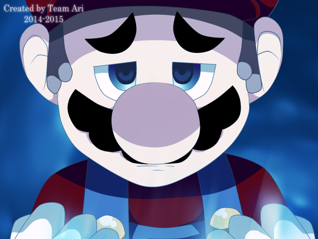
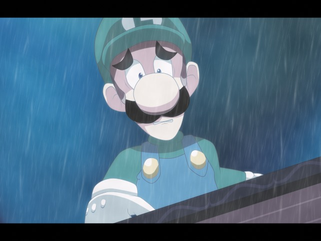
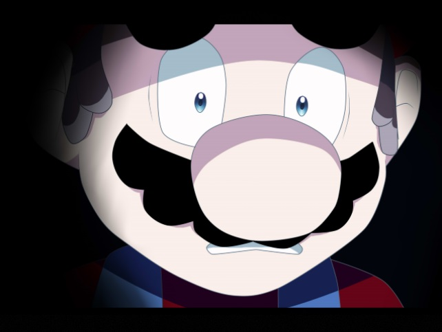

Mini Menu
• Index • Map Index • Top
• Video Introduction

↑ THE NIGHTMARE BEGINS ↑

↑ THE HORROR CONTINUES ↑
 The Pocket Watch.jpg)
↑ A NEW ADVENTURE ↑
 ███ ███▄ ▄███▓ ▄▄▄ ██▀███ ██▓ ▒█████ ███ ██ ▓██▒▀█▀ ██▒▒████▄ ▓██ ▒ ██▒▓██▒▒██▒ ██▒ ██ ██ ▓██ ▓██░▒██ ▀█▄ ▓██ ░▄█ ▒▒██▒▒██░ ██▒ ██ ██ ▒██ ▒██ ░██▄▄▄▄██ ▒██▀▀█▄ ░██░▒██ ██░ ██ ██ ▒██▒ ░██▒ ▓█ ▓██▒░██▓ ▒██▒░██░░ ████▓▒░ ██ ██ ░ ▒░ ░ ░ ▒▒ ▓▒█░░ ▒▓ ░▒▓░░▓ ░ ▒░▒░▒░ ██ ░ ░ ░ ▒ ▒▒ ░ ░▒ ░ ▒░ ▒ ░ ░ ▒ ▒░ ░ ░ ░ ▒ ░░ ░ ▒ ░░ ░ ░ ▒ ░ ░ ░ ░ ░ ░ ░ ▄▄▄█████▓ ██░ ██ ▓█████ ███▄ ▄███▓ █ ██ ██████ ██▓ ▄████▄ ▄▄▄▄ ▒█████ ▒██ ██▒ ▓ ██▒ ▓▒▓██░ ██▒▓█ ▀ ▓██▒▀█▀ ██▒ ██ ▓██▒▒██ ▒ ▓██▒▒██▀ ▀█ ▓█████▄ ▒██▒ ██▒▒▒ █ █ ▒░ ▒ ▓██░ ▒░▒██▀▀██░▒███ ▓██ ▓██░▓██ ▒██░░ ▓██▄ ▒██▒▒▓█ ▄ ▒██▒ ▄██▒██░ ██▒░░ █ ░ ░ ▓██▓ ░ ░▓█ ░██ ▒▓█ ▄ ▒██ ▒██ ▓▓█ ░██░ ▒ ██▒░██░▒▓▓▄ ▄██▒ ▒██░█▀ ▒██ ██░ ░ █ █ ▒ ▒██▒ ░ ░▓█▒░██▓░▒████▒ ▒██▒ ░██▒▒▒█████▓ ▒██████▒▒░██░▒ ▓███▀ ░ ░▓█ ▀█▓░ ████▓▒░▒██▒ ▒██▒ ▒ ░░ ▒ ░░▒░▒░░ ▒░ ░ ░ ▒░ ░ ░░▒▓▒ ▒ ▒ ▒ ▒▓▒ ▒ ░░▓ ░ ░▒ ▒ ░ ░▒▓███▀▒░ ▒░▒░▒░ ▒▒ ░ ░▓ ░ ░ ▒ ░▒░ ░ ░ ░ ░ ░ ░ ░░░▒░ ░ ░ ░ ░▒ ░ ░ ▒ ░ ░ ▒ ▒░▒ ░ ░ ▒ ▒░ ░░ ░▒ ░ ░ ░ ░░ ░ ░ ░ ░ ░░░ ░ ░ ░ ░ ░ ▒ ░░ ░ ░ ░ ░ ░ ▒ ░ ░ ░ ░ ░ ░ ░ ░ ░ ░ ░ ░ ░ ░ ░ ░ ░ ░ ░ ░ //-------------------------------------------------------- By Austin J. Cowan ---- 1.0 --- Hello everyone, this is the creator of this walkthrough. I hope this guide helps you and if I miss anything, please email me: AustinJP25@gmail.com. I will try to fix ASAP. If you are reading this Jessica (Marios-Friend9), you made a wonderful and beautiful game. Your artwork and whoever made this game possible are amazing. Keep up the good work and I hope you finish ARC soon and make more games after that! :) Links to her pages: DeviantArt, Twitter, YouTube. Link to the Game's Website: (Mario) The Music Box As you know now, (Mario) The Music Box is getting taken down from acouple of sites. I wish I could post a download link to the game. But I will not. I don't also want this walkthrough to be taken down as well. WHY NINTENDO, WHY?!?!?!?! You can download the gallery photos if you want. They are amazing to look at: CLICK HERE! //----------------------------------------------------------------------------------------- /****************************************************************************************** INDEX: 1. INFORMATION ABOUT THE GUIDE 2. INFORMATION ABOUT THE GAME 3. THE GAME INTRODUCTION - VIDEO INTRODUCTION - - THE GARDEN - - MAIN LOBBY - - THE MUSIC BOX HALLWAY - - THE MUSIC BOX ROOM - - BACK TO THE MUSIC BOX HALLWAY - - BACK TO THE MAIN LOBBY - 4. THE HORROR TRUELY BEGINS (MARIO) - MAIN LOBBY - - THE BATHROOM - - THE LIVING ROOM HALLWAY - - THE FOREST HALLWAY - - THE FOREST ENTRANCE - - THE LIVING ROOM - - THE PIANO GIRL - - THE SCISSOR GIRL ROOM - - BACK TO THE PIANO GIRL - - THE LIBRARY - - THE BEDROOM HALLWAY - - ENDLESS HALLWAY - - THE BEDROOM HALLWAY #2 - - THE GRAVEYARD - - BACK TO THE BEDROOM HALLWAY - - BACK TO THE MAIN LOBBY - - THE KITCHEN - - THE MASTER BEDROOM - - THE ATTIC - - BACK AT THE MASTER BED ROOM - 5. M...MMAAARRRRRIIIOOOOOOOOOO!!!! (LUIGI) - NOTE ABOUT LUIGI - - LOOKING FOR YOUR LOST BROTHER (MAIN LOBBY) - - THE BALLROOM HALLWAY - - IS THAT MARIO? (RESTING ROOM) - - WAIT! THAT CAN'T BE MARIO! (BEDROOM) - - THE RESTING ROOM - - THE CHEST ROOM - - THE STORAGE ROOM - - BACK AT THE RESTING ROOM - - WHAT IS GOING ON WITH LUIGI'S HEAD! (THE BATHROOM) - - IS THAT MARIO AGAIN?! (RESTING ROOM) - - THERES A THIRD FLOOR? (RIGHT ROOFTOP HALLWAY) - - WHY MARIO?!?! (THE ROOFTOP) - - LEFT ROOFTOP HALLWAY - - MIDDLE ROOFTOP HALLWAY - - LEFT ROOFTOP HALLWAY AGAIN - - THE BUTLER'S ROOM - - THE BUTLER'S BATHROOM - - WHO ARE YOU? (LEFT ROOFTOP HALLWAY) - - A GIRL?! (DRAWLING HALLWAY) - - THE DRAWLING ROOM - - POOR LUIGI - 6. WEIRD DREAMS (MARIO/RIBA) - VOID (MARIO) - - WAKING UP (BEDROOM) [MARIO] - - HEY, HOW DID WE GET HERE? (BEDROOM HALLWAY #2) [MARIO] - - THESES CHOICES (GRAVEYARD) [MARIO] - - OMG RUN!!! (BEDROOM HALLWAY #2) [RIBA] - - WOAH, THAT WAS A CLOSE ONE (BEDROOM HALLWAY) [RIBA] - - THIS ISN'T ENDLESS (NURSERY HALLWAY) [RIBA] - - SO DARK (NURSERY) [RIBA] - - FOUND IT! (DOLL ROOM) [RIBA] - - TIME TO GO BACK FOR MARIO (NURSERY ROOM) [RIBA] - - MARIO??? (NURSERY HALLWAY) [RIBA] - - GOTTA HIDE! (NURSERY ROOM) [RIBA] - - BACK AT THE VOID [MARIO] - - THE LIES (NURSERY ROOM) [MARIO] - - THE GRAVEYARD AGAIN - - THE GRAVEYARD #2 - - GRAVEYARD #3 - - GRAVEYARD #4 - - BACK TO GRAVEYARD #3 - - BACK TO GRAVEYARD #4 - - GRAVEYARD #5 - - BACK TO THE VOID ONCE AGAIN - - THE SEARCH FOR LUIGI - - SEEMS AWFULLY FAMILAR (DRAWLING ROOM) - - THE CHASE (DINER ROOM) - - JOURNAL ENTRY COUNT - 7. A BROTHER REUNION!!! (MARIO/LUIGI) - HELL TO THE YEAH! THE MARIO BROS. ARE IN BUSINESS! (DRAWLING ROOM HALLWAY) - 7.1. UP THE STAIRS CHOICE - Up THE STAIRS - - DEECIDING TO GO TO THE RIGHT (MIDDLE ROOFTOP HALLWAY) - - ARE YOU OK MARIO? (LEFT ROOFTOP HALLWAY) - - ROSA THE MAID (THE BUTLER'S ROOM) - - THE MIDDLE ROOFTOP HALLWAY - - THE RING AND LETTER (THE BUTLER'S LIBRARY) - - HERE YOU GO! (THE BUTLER'S ROOM) - - YOU OKAY MARIO? (LEFT ROOFTOP HALLWAY) - - MARIO! NO! (BOSS) - 7.2. DOWN THE STAIRS CHOICE - DOWN THE STAIRS - - BACK AT THE UNKNOWN ROOM - - FAMILIAR HALLWAY AGAIN - - THE BEDROOM HALLWAY - - THE TELEPHONE (BEDROOM HALLWAY #2) - - THE MAIN LOBBY - (Normal Bad Ending) - THE MUSIC BOX HALLWAY - - THE MAIN LOBBY - - THE LIVING ROOM HALLWAY - - THE LIVING ROOM - - THE MAIN LOBBY - - THE BALLROOM HALLWAY - - THE BALLROOM - - AGAIN AT THE VOID - - BACK AT THE BALLROOM - - BACK AT THE BALLROOM HALLWAY - - THE BROKEN ROOM - - THE BROKEN ROOM #2 - - BACK TO THE FOREST ENTRANCE - - QUICK JOURNAL COUNT - - INTO THE FOREST OF SUICIDE - - IN FRONT OF THE MINESHAFT - - MINESHAFT PUZZLE ROOM - - MINESHAFT PUZZLE ROOM #2 - - MINESHAFT PUZZLE ROOM #3 - - MINESHAFT PUZZLE ROOM #4 - - MINESHAFT PUZZLE ROOM #5 - - SECRET CAVE - - LAST JOURNAL COUNT - - THE MINESHAFT #2 - - MINESHAFT #3 - - MINESHAFT #4 - - MINESHAFT #5 - - HURRY (MINESHAFT #2) - - THAT WAS CLOSE (MINESHAFT #6) - - MARIO WHY?!?!?! (MINESHAFT #6) - - MARIO, WHERE DID YOU GO? (MINESHAFT #7) - - RIBA WHY? (RITUAL ROOM) - - BRING IT ON, I'LL DO WHATEVER IT TAKES TO SAVE MARIO!!! (The Boss) - - LET'S GET OUT OF HERE! (RITUAL ROOM) - - THE MINESHAFT #7 - - MINESHAFT #8 - - MINESHAFT #9 - - THERES LIGHT!!! (MINESHAFT #10) - - THE ENDING - 8. JOURNAL ENTRIES 9. MAP LAYOUT 10. CREDITS 11. THANK YOU! ******************************************************************************************/ //-------------------------------------------------------------------------------------------------------------------- // 1. INFORMATION ABOUT THE GUIDE //-------------------------------------------------------------------------------------------------------------------- THIS WILL BE A SPOILER-FREE GUIDE. ANYTHING THAT I THOUGHT WAS BEING SPOILED IS REPLACE BY "-REDACTED-". I'll try not to spoil things for the player so I won't talk much of what the cutscenes are. I want you to experience the fear and joy of the game. I made this guide becasue I enjoyed the game very much. I definitely plan on making a guide when ARC gets done. I might also plan on making a guide on her future games. Also note that the room names I used aren't the names used in the game. I used it to my comfort. So you can call them whatever you want. These names just help me to remember them easierly. //-------------------------------------------------------------------------------------------------------------------- // 2. INFORMATION ABOUT THE GAME //-------------------------------------------------------------------------------------------------------------------- Ok, I just want to make things clear about this game. This game is choice driven which means that the choices you do will effect the outcome on the ending. Also, the choices that you do can also make you get a gameover. So if you don't a gameover or you want to know how to get everything in this game, this will be the best guide (hopefully). This game also has many things to interact with and you can freely do so but almost everything you interact with is pointless. Hear me out, I love to interact to everything, don't hate me when I say it's pointless. My first playtrhough, I interacted to everything in the game and I had a ton of fun. But if you want a 100% in the game, there are only a couple of things that you (must)/can freely interact with. For instance, the liabrary room has a bookcase to interact with that you can completely ignore but if you do ignore it, you won't get 100% in this game. There are some things that you can interact with that you can get more story information on but won't effect the ending of the game. If you want to interact with everything, go ahead! :) //--------------------------------------------------------------------------------------------------------------------//-------------------------------------------------------------------------------------------------------------------- 3. THE GAME INTRODUCTION //-------------------------------------------------------------------------------------------------------------------- - VIDEO INTRODUCTION - - THE GARDEN - The game starts off with you choosing the text sound enable/disable and also the choice of watching the intro or not. After you do those choices then your horror adventure begins. After those choices the game starts off with Mario getting lost. He then gets his map out and now knows where he is going. You the player will then get control when Mario gets to the Garden. The Player will get a Journal Entry. This is the introduction part of the game. It will teach you the gaming machanics. Almost everything in the Garden is interactable. Enjoy it while it last cause after you leave the Garden, some of the stuff you interact with can kill you causing a gameover. To leave the Garden, you must go to the fountain that is in the middle of the Garden. A message will then pop up which will say, "Curosity Killed The Cat". This just tells you that choice that you make can kill you. After reading that message, you the player will get an option to choose between yes or no. Pick yes and you'll get a rusty crowbar. Now go to the door and cutscene will appear (depending if you didn't go to the door first before picking up the rusty crowbar). After that cutscene, you can interact with the door. A button scene will appear (depending on the version you have, you will either press any keys on the keyboad or just the spacebar. Most lastest versions will make you just press the spacebar. This was due because players thought it was too hard with pressing any keys. e personally, I thought it was fun.). After that scene is over, you will then get inside the house. - MAIN LOBBY - Once you enter the house, Mario will talk about how dark the main lobby is. He will also talk about seeing a light from a room upstairs. You can interact everything but it won't do much since its dark. You must go to the room upstairs. Go straight to the stairs, take a left and you'll see a door with an arrow above it (indicating that is where you must go). Enter the room. - THE MUSIC BOX HALLWAY - Once you enter that room, you'll hear music. Mario will talk again. Once hes done talking, continue going left and enter that room. - THE MUSIC BOX ROOM - The room is completely lit and there is a music box on the table in the middle of room. Interacct with it. You'll pick it up and also pick up a map under it. Then, the room gets dark for unknown reason and Mario will get hit. When Mario gets up, he'll see that there is a latern next to him. He automatically picks it up and uses it. Now you the player has light. If you want, you can interact with everything in the room. Nothing will kill you. Once your're done with that, you can leave the room. - BACK TO THE MUSIC BOX HALLWAY - Continuing through the hallway you'll see blood on the wall. You can choose to interact with it, it'll say, "TAKE THE EXIT" (indicating you to leave the house). Once you have read that or not, leave the hallway. - BACK TO THE MAIN LOBBY - Once your in the main lobby, again you can choose to interact with the envirment you're in but I would wait and just go to the entrance of the house first. Continue going right, down the stairs and to the door. But once you interact with the door, you the player will see that there is no door. Now the horror adventure truely begins. //--------------------------------------------------------------------------------------------------------------------
//-------------------------------------------------------------------------------------------------------------------- // 4. THE HORROR TRUELY BEGINS (MARIO) //-------------------------------------------------------------------------------------------------------------------- - MAIN LOBBY - Mario will freak out, trying to calm himself and tell himself that this is just a prank. Once his panic attack stops and you get control over Mario, you can almost freely go anywhere. You can go to the right and left hallway of the firt floor and the bathroom in the first floor (right door). You can also interact with the evironment now, just be careful. If you interact with the door upstairs from the middle, you will die. If you interact with the crack upstairs from the bedroom door (the right door), you will die. Its your choice. - THE BATHROOM - This is if you choose the right door from the first floor. This is gonna be very quick, Be wary what you do here though. You can die twice here. Once you walked through the little hallway in the room, you'll be in the bathroom. There is a blood on the floor to the left of you (looking away from the hallway below you). DO NOT INTERACT WITH THAT BLOOD SPOT, YOU WILL DIE! Instead go to the shelf beside from the right of the sink. Interact with it and you'll get a music sheet (this will be used later). Becareful now, once you take a couple of steps a monster will appear and chase you. GO BACK TO THE DOOR YOU CAME FROM AS FAST AS POSSIBLE. Once you're at the door, you'll be dealt with an action scene. If you complete the action scene successfully, you'll exit the room. The door will be locked from now on. - THE LIVING ROOM HALLWAY - This is if you chose the right hallway of the first floor. When you enter this room. You will see a shadowy person going into the darkness. Mario get curious who it is, thinking it might be the princess. There is a door in the middle of the hallway, you can choose to enter it but there is nothing to do in there. That will be for later, towards the end of game. Just continue to the right and you'll be in the living room. - THE FOREST HALLWAY - If you decided just to explore around here, no biggie. There is a door ahead, you can decide if you want to go there or not. - THE FOREST ENTRANCE - Ok, there is nothing to do here, this route is here for later in the game. If you go up to water, it'll let you decide if you want to swim across or do nothing. DON'T SELECT SWIM ACROSS BECAUSE YOU WILL DIE. Just turn back to the living room hallway. - THE LIVING ROOM - There is a lot of things to interact with this room. Be wary though, there is a spot where you'll die if you interact. There is a door literally right above you. You can choose to enter there. If you enter there, there is a doll that you can get. The dool in on the shelf, the farthest left corner of the room. As of right now, I don't belive the doll has anything important to the story; I think its just use to have fun. If you go to you're inventory and go to key items, if you choose the doll. It'll interact with the music box. Nothing special, just some sweet music though. If you choose not to go or you decided to leave the room, there is a bookcase beside the door. Interact with it and you'll get a photo and a Journal Entry (YOU MUST GET THIS JOURNAL ENTRY TO OPEN THE SCISSOR GIRL'S ROOM). Now continue going right, you'll be in a little mini hallway. There is a book you can interact with at the right corner of the end of the hallway, it does nothing but give you the chills. There is a door by the leftside of the book. If you decide to go in there be careful. (If you went inside the room, skip to THE SCISSOR GIRL ROOM section then go to THE PIANO GIRL section when you're done) - THE PIANO GIRL - Go to the left, and there will be a little room with a fireplace and a piano. Interact with the piano (This is only possible if you have the first music sheet that was in the bathroom) and Mario will play music. Once that is over, a spirit will appear and ask you to find the other missing piece of the music sheet. After done talking to her, you'll get a Journal Entry. Remember that door by the book (in this room)? Go the door by the book if you haven't yet. - THE SCISSOR GIRL ROOM - BEFORE YOU ENTER THIS ROOM, MAKE SURE YOU SAVE IT. Once you enter this room the first time, you'll be dealt with an action scene. There is a girl in there with scissors trying to kill you. If you sucessfully pulled off the action scene, it'll make you leave the room. Upon so, you'll get a Journal Entry but go back in the room because the music sheet is in there. Once you go back in the room, walk a little ahead and you'll see a chest. You can decide to open it but it'll give you scissors which I believe that has no use to you. Anyways, go to the end of the room and you'll see a shelf that you can interact with. Interact with it and you'll get a music sheet. Now leave the room. - BACK TO THE PIANO GIRL - Once you collected both of the music sheets, give the music sheets to the piano girl will give you a key to the library which is located in the left door of the second floor of the main lobby. If you haven't got any of the music sheets; one is at the bathroom, the other is at the Scissor Girl's room. - THE LIBRARY - Once you got your way here, there will be a lamp right beside you from the left. You can choose to turn it on. Its entirely up to you if you want but it'll lit up the room if you decide to turn in on. There is a couple of things you can interact here. There is one thing in this room that you must interact if you want 100%. There is a bookshelf from the third row farthest from you. You must interact with the third shelf closest to the right of the room. It'll give you a journal entry if you read "The Missing People". If you decide not or did read it, go to the little table that has a book on it from the left side of the room. It'll have a picture of Mario with a bunch of words that say, "kill" around the picture. You'll get a key to the Kitchen and another Journal Entry. You can choose to stay here and read more books or can leave and continue on your horror adventure. - THE BEDROOM HALLWAY - Once you enter here, walking a couple of steps; you'll see a door. If you want 100%, you must enter that room before continueing on. If you decided not to go or have done this, continue left of the hallway and enter the next room. Hey wait a second you might say, what about that check next to the door on the middle of the hallway. Well, you can't open it till you get a chest key but that is in the next room. So go to the next room. - ENDLESS HALLWAY - If you decided that you want to have a 100%, you have not continued and entered this room instead. This room is endless, all you have to do is go through it once and you'll get a journal entry. You can leave after that is done. I'LL REPEAT IT THOUGH, YOU HAVE TO GO THROUGH THE HALLWAY ONCE TO GET 100% IN THE GAME. You can leave now and go on with your adventure. - THE BEDROOM HALLWAY #2 - There will be a door to your right (walking from the hallway). You can't enter there yet. instead continue walking in the hallway, you'll see a plant knocked over. Go to it and interact with it and you'll get a chest key. You can continue through the hallway. Once you're at the end of the hallway, a life or death scene will appear. Mario will hear a monster/spirit and he'll hide in the create. A message will appear and it'll give you two choices. If you want to leave, make sure that YOU STAY IN THE CREATE. If you want to die, YOU TAKE A PEAK but have fun with that. Once the monster is gone, continue through the hallway. You'll enter the graveyard. - THE GRAVEYARD - There isn't much to do here yet other than death choices. lol. So just go back. - BACK TO THE BEDROOM HALLWAY - Go to the chest and open it by interacting with it. You'll get a note and a Journal Entry. This note will be used for the safe in the kitchen. - BACK TO THE MAIN LOBBY - Go to the kitchen which is located in the left door from the first floor. - THE KITCHEN - Once you have entered this room, you can interact with everything if you want to. If you plan to do so, MAKE SURE YOU DON'T INTERACT WITH THE DOOR AT THE MIDDLE END OF THE ROOM. You will die. If you haven't look at the note yet, go do it now. You'll get the code to the safe. Once you do so, go to the safe which is at the top left corner at the room. The code isn't what is said on the note but how they are alphetbetically numbered. For instance, A is 1, B is 2, C is 3, and so on. NOTE: You can't open the safe without knowing the code. So you better get that code, lol. The code to the safe is: H(8) O(15) P(16) E(5) L(12) E(5) S(19) S(19) Once you enter that code, you'll get the Master Bed Room Key which is located on the door to the right at the Second floor from the Main Lobby. - THE MASTER BEDROOM - The Master Bedroom is pretty simple puzzle. Once you entered here, there will be a door right infront of you but it is locked. To unlock you, you would have to go to the attic of the room. There are stairs at the bottom left corner of the room. - THE ATTIC - Ok, here where the puzzle is. I'll tell you what to do: 1. Push the first pot you see down. 2. Go right and push the second pot right. 3. Go down and push third pot down. 4. Go right and push fouth pot all the way to the right. 5. Go up and push the fifth pot just up one time and then push sixth pot beside it right all the way. 6. Go up then left and push the seventh pot to the left one time then push the last pot beside to the right all the way. 7. You finish the puzzle, now leave the attic. - BACK AT THE MASTER BED ROOM - Once you made it down the stairs, you should be back at the Master Bedroom. You can choose to unlock that door that was locked in the front. Anywho, there is a bookcase to interact with. But once you do, a cutscene will appear and you'll lose the ability to control Mario. Before you do so, I would save and if you want you could explore around the house if you want. Now, at this point you should have eight journal entries. If you don't, you better go back and reread my walkthrough. The journal entries that you should have at this point are: 1. Made it to home 2. Couple in the photo 3. Someone wants me dead 4. Girl with Scissors 5. An Investigation 6. Aria 7. Endless Hall 8. Hopeless IF YOU DON'T HAVE ANY OF THESE MAKE SURE YOU DO, YOU'LL ONLY GET 100% (TRUE ENDING) IF YOU HAVE ALL THE JOURNAL ENTRIES!!! If you don't want to get 100% then you can just go on ahead. :) //--------------------------------------------------------------------------------------------------------------------  //-------------------------------------------------------------------------------------------------------------------- // 5. M...MMAAARRRRRIIIOOOOOOOOOO!!!! (LUIGI) //-------------------------------------------------------------------------------------------------------------------- - NOTE ABOUT LUIGI - Even though its hella fun playing as Luigi (Luigi is my man!), there isn't really much to do as him. You can't collect any Journal Entries because he doesn't have a journal. (If you are reading this Jessica, you definely should make Luigi have a journal, it would be pretty cool!) There is only a couple of death spots playing as him. I'm not trying to rain on your parade but just forwarning you that don't expect much. Now onward to awesomeness cause Luigi is gonna save the day! :) - LOOKING FOR YOUR LOST BROTHER (MAIN LOBBY) - Ok, I'm gonna start to say that most of the rooms are locked when you play as Luigi. Since I believe the reason is cause Luigi isn't far enough into the mansion at first. He just got there and later he'll encounter problems. Anyways, before I get to ahead of myself. Lets find your brother! So, you must go to the second floor of the main lobby. Once you're there, you can go to the right hallway now (before you could't go as Mario because the spirits didn't watn him to). - THE BALLROOM HALLWAY - Ok, beware of this hallway. A little along the way you'll see a door in the middle of the hallway. DO NOT GO IN THERE! Luigi will imediately die if he opens that door. Just avoid it unless you're just here to see all the deaths in the game, lol. Just continue right and go to the next room. - IS THAT MARIO? (RESTING ROOM) - Once you you're in the room, you'll be greeted with a cutscene. You'll be chased by a misterious Mario figure that came out of a painting. Once the cutscene is over you'll imediately get an action scene. Once you complete that, try to go to the door to the left of you. That is the only door that can be open. If you were lucky enough to get to that door fast or you outsmarted the "Mario" by running around the room. The door has a code: STAR + TRIANGLE = ? Some people might get this, others not so likely. I'll give you a tip, get it? If you didn't figure out what I just told you there. You count the tips of the figures: STAR(5) + TRIANGLE(3) = STARANGLE(8) The door will open and Luigi will automatically go to the next room. - WAIT! THAT CAN'T BE MARIO! (BEDROOM) - Another cutscene will appear, after that cutscene is over you'll get to be in control again. Mario is resting in the bed next you but theres nothing you can do much for him. So you should leave the room and see whats going on. - THE RESTING ROOM - Ok, the "Mario" that was chasing you is gone. Go to the room the far bottom right of you. There is a item to get in there. - THE CHEST ROOM - Once you're in this room, just walk down a bit and you'll see a chest surrounded by blood. Opening it but it won't let you first. Try it a second time and a cutscene will appear. After the cutscene is over, you'll get the storage key. Leave the room and go to the far bottom left door of the resting room. - THE STORAGE ROOM - Ok, this room is a bit creepy isn't it. This room has a couple of cutscenes and a action scene. Go down and you'll be treated with an cutscene. after that cutscene is over, go left and go in that room. There is a key and a map to collect from one of the shelves from the right corner of the room. Once you pick up the bathroom key and the map, you can now leave the room. But beware, along the way you'll be treated with an action scene. - BACK AT THE RESTING ROOM - After that action scene you'll be automatically here. Now just go to the room next to you from the right. That is the bathroom. - WHAT IS GOING ON WITH LUIGI'S HEAD! (THE BATHROOM) - Once you're in the bathroom. You see a dead body on floor, go to it. You'll be treated with a cutscene. After the cutscene you'll automatically leave the room. - IS THAT MARIO AGAIN?! (RESTING ROOM) - You'll see a Mario figure walking to the stairs in the room (stairs is located from the top right corner of the room). Follow him and go to the stairs. Once you make it up the stairs, you'll be in another room with another set of stairs. Go up the stairs again to the left of you. - THERES A THIRD FLOOR? (RIGHT ROOFTOP HALLWAY) - You'll be in a hallway room. There is a bookcase directly infront of you that you can move. You move it to the left. Once you do that, there is a hole. Interact with the hole and you'll get a drawling. Go into you're inventory and look at the drawling. There is a code on the back of the drawling: 12A6 There is a door to the left of you but it is locked from the other side. You must go right and go up the stairs. (You can freely look around if you want to before you go upstairs) - WHY MARIO?!?! (THE ROOFTOP) - Once you got up the stairs, you'll be at the rooftop. A cutscene will play. After the cutscene, you'll gain control again. Walk up a bit and go left. You'll see stairs going down. Go down those stairs. - LEFT ROOFTOP HALLWAY - Ok, if I were you. I would go imediately right to the door. You want to unlock the door that was locked first for easier acess. - MIDDLE ROOFTOP HALLWAY - Nothing much to do here, can't open any doors other the door that connects to the other hallway. Unlock that door and go back the the hallway you were previously in. - LEFT ROOFTOP HALLWAY AGAIN - once you're back here, go to the door to the top right. The door to the left is broken, it can't be open. So go to the door to the top right. - THE BUTLER'S ROOM - Ok, another creepy place. OMG, so many creepy places! Anyways, Luigi ain't scared of no ghost! lol. There is a cabnet in front of you that can open. It will need a code, do you remember it? It was that code that was on the back of the drawling you got. If you didn't get that drawling, make sure you get it because if you don't open this cabnet and get the item that is in it. YOU WILL DIE IN THE NEXT ROOM! So once you input the code you'll get an old photo. This will be very important to get cause without it, you can't continue. Go to the door from the left of you and go in that room. (You can freely interact here if you want) - THE BUTLER'S BATHROOM - Ok, by far this is really creepy. The butler is waiting for you. Go talk to him. You give him the photo and he'll tell you -REDACTED- and leave you. He drops a key for you to pick up. Once you gain control, pick up the key. You got the Darwling Room key. Leave the bathroom and the Butler's room. - WHO ARE YOU? (LEFT ROOFTOP HALLWAY) - Once you enter back the hallway, a cutscene will tigger. You'll meet a person named Riba (he's also investigating the house). He tell you -REDACTED- . He leaves you and wishes goodluck finding your brotehr. Once the cutscene is over, you want to go to the drawling room which is located on the second floor. To go there, you must go the door at the bottom of the hallway. - A GIRL?! (DRAWLING HALLWAY) - Once you get in this room, you'll see a girl walk across the room (spooky isn't it?). After she disappears, you'll have control again. Theres an item on top of the bookcase (located between the two doors). You're wondering how you can get this item? Well, there is a stoll across the room. You must push it across the room to the bookshelf. Once you do that, interact with the stoll and you'll get a screwdriver. This will be useful later. Now, there isn't much to go to. The door is locked from the left of you and the door at the bottom is blocked. Go to the door to the right of you. A cutscene will appear. After that you can go in. - THE DRAWLING ROOM - OMG! There's that "Mario" again! But don't worry. He won't do anything to you in a bit. Ok, this room is kind of've like a puzzle. There is a book to the left of you, go to it. Interact with it and it'll say, ".....There's a secret I left in this room.~" This just tells you that there is something to interact with that will open a secret door. So guess what you're going to do? Search around everywhere and interact with it. Ain't that fun? Well, if you can't figure it out yet, don't worry! I tell you how to find the secret. FIRST THOUGH, YOU MUST GET THAT SCREWDRIVER! Without it, you can't find the secret. The secret is on the clock on the top right corner of the room. Interact with it and it'll open a secret door at the bottom left corner of the room. Go to it and you'll see stairs. Go down the stairs. - POOR LUIGI - Once you go down the stairs, you'll get pushed by the "Mario" that was in the room earlier with you. You fell down the stairs and get knocked out. You get up and -REDACT- (go to it and interact with it and a cutscene plays) //--------------------------------------------------------------------------------------------------------------------  //-------------------------------------------------------------------------------------------------------------------- // 6. WEIRD DREAMS (MARIO/RIBA) //-------------------------------------------------------------------------------------------------------------------- - VOID (MARIO) - A Luigi's cutscene will end and you will be playing as Mario. He's in a void, a dream. But why? If you walk a bit, you'll see a woman standing there. Interact with her and she'll say -REDACTED-. You'll then be transported to another room. Just keep going right and you'll see a girl sitting down. Interact with her and a cutscene plays. - WAKING UP (BEDROOM) [MARIO] - A cutscene will play; Mario wakes up hearing a voice, it's Riba from Luigi's playthrough. But why is he here? He talks and Mario talks. After the cutscene is over, you'll get a Journal Entry. Go to the blue table next to the bed. Interact with it and you'll get anotehr Journal Entry. Now, there is a door to the left of you. Go to it. - HEY, HOW DID WE GET HERE? (BEDROOM HALLWAY #2) [MARIO] - Notice where we are? If you do, you have a prety good memory. This is the hallway to the outside but we needed a bridge or something to get across. Since Riba is in your party, I believe that getting across that gap is possible. Go outside. (You can't go to the other rooms cause Riba won't let you) - THESES CHOICES (GRAVEYARD) [MARIO] - Interact with the cliff and (cutscene) you'll talk to Riba and some options will appear, choose wisely! These choices can be quite diffitcult to choose. Some of the choices may seem to be right but they're not. The correct choices are: 1. Let him go alone 2. Keep it Once you do those choices, you'll be playing as Riba. - OMG RUN!!! (BEDROOM HALLWAY #2) [RIBA] - AS SOON AS YOU PLAY AS RIBA TURN BACK AND GO OUTSIDE AGAIN. MAKE SURE YOU SAVE!!!! There is a evil spirit in the hallway. You get touch by her, it's a gameover. Now then, let's run like hell. lol. Once you go back into the hallway, run along the left side of the room. The monster spawns close the rightside of the walls (almost where the bedroom is at). RUN, RUN, RUN to the other hallway. After you're in that room, you're safe! - WOAH, THAT WAS A CLOSE ONE (BEDROOM HALLWAY) [RIBA] - Once you are here, you should save again. There are more dangers ahead. You can't go to the main lobby. Riba won't let you. Remember that endless hallway. Try going in there. - THIS ISN'T ENDLESS (NURSERY HALLWAY) [RIBA] - Just continue ahead and go to the next room. Oh look at that, it isn't endless for some reason. IF YOU DON'T REMEMBER THIS BEING ENDLESS, YOU MUST HAVE NOT GONE INTO THE HALLWAY BEFORE WHICH MEANS YOU CAN'T GET THE TRUE ENDING! Sorry, you'll have to start over if you want the true ending. - SO DARK (NURSERY) [RIBA] - Ok, there isn't much to do in this room. Just go to the top left corner of the room, there is a door there. Go in it. - FOUND IT! (DOLL ROOM) [RIBA] - This by far is the creepiest room I seen. Man, why does it have to be dolls. Anyways, There are planks at the top left corner of the room. Interact with it. You'll get a plank and also some matches to see and someth.... OMG! THERES AN EVIL SPIRIT WITH YOU IN THE ROOM. There is going to be an dialoge scene. Life or death choice. To live chose, "Dodge it's attack then run". If you chose the other, you will die. Once that done, you'll be at the nursery room again. - TIME TO GO BACK FOR MARIO (NURSERY ROOM) [RIBA] - Now it's time to go back to Mario, just leave the room. - MARIO??? (NURSERY HALLWAY) [RIBA] - Just coninue along the way and go to the door. A cutscene will appear and Mario's here but he looks a little strange. He looks like he -REDACTED-. RUN AWAY FROM MARIO OR HE'LL KILL YOU! The game will let you save. You can't outsmart him, he'll kill you so you're best choice is to go back. - GOTTA HIDE! (NURSERY ROOM) [RIBA] - ONCE YOU ENTER THIS ROOM, TURN AROUND AND INTERACT WITH THE DOOR TO LOCK IT. IF YOU DIDN'T, YOU WILL DIE! Ok, now you got to find a hiding spot. You only have 30 seconds to hide. There are multiple hiding spots, a secret and funny one is the lamp by the fireplace. In my first playthrough I picked that spot cause I was trying to be the best hide-n-seek player, lol. Anyways, pick the closet next to the doll room door. Once you chose the closet and cutscene will play then Dialoge will appear, choose "Jump out". If you choose the other, you will die. Once you jump out, you'll be at a action scene. Do the action scene twice but not a third time. If you do it a third time, it'll be a gameover. After that action scene you'll be at another cutscene. - BACK AT THE VOID [MARIO] - Mario will wake up and he'll see a woman walking across. Follow her. A little along the way there will be a door that has light coming out from it. Enter it, a cutscene will play. - THE LIES (NURSERY ROOM) [MARIO] - Another cutscene will play, Mario will wake up and is then talking to Riba. Mario will relize he had a -REDACTED-. You will have to lie to Mario to be alive/get the good ending(kinda, the ending you get when you lie to him isn't really a ending, its more of a gameover). These are the correct answers: 1. Lie 2. Don't tell him Pretty simple, lol. Now, you can leave and go to the graveyard. - THE GRAVEYARD AGAIN - Interact with the chilf agian, a cutscene will appear. Apparently Riba forgot the planks. Oh boy... Anyways, he goes alone again to get the planks and you made it safely across. - THE GRAVEYARD #2 - Just continue on, nothing to see. lol. - GRAVEYARD #3 - After walking acoupe of steps up the stone stairs, Mario will pass out and you'll play as Riba for a bit. The reason due to mario passing out is because he is hungry. I would be hungry too, being scared so much will probably make any person hungry. Anyways, the food is up the stairs to you're right. - GRAVEYARD #4 - Be warned, don't talk to any of the spirits along the way. Riba will die if you do. Once you made it up the stairs, you'll see a second set of stairs, go up and you'll see a log. Don't go left across the bridge (you can't even cross it anyways yet). There are mushrooms at the left side of the log. MAKE SURE YOU PICK THE RED MUSHROOM, DON'T PICK THE PURPLE MUSHROOM DUE TO OBVISOUS REASONS! IF YOU PICK UP THE PURPLE ONE, YOU WILL KILL MARIO. Go back down the stairs and go down the other set of staris to Mario. - BACK TO GRAVEYARD #3 - Give Mario the mushroom. Mario will thank Riba and will be playable after that. Go up the stairs again. - BACK TO GRAVEYARD #4 - Don't cross the bridge yet. Go up to the log (up the second set of stairs) and interact with that spirit sitting down on the log. You will get a Journal Entry. Trust me, MAKE SURE YOU DO THIS CAUSE I DIDN'T EVEN NOTICE HER IN MY FIRST PLAYTHROUGH. lol. I got very upset cause I was missing one Journal Entry when I beat the game. Anyone, now go down the stairs and cross the bridge. - GRAVEYARD #5 - A cutscene will play, you'll start moving slow and hearing voices. Just get across the bridge and go up those stairs. You can interact with the spirit if you want to but she just disappears. You do want to interact with that letter on the ground. Once you do a cutscene will play. You'll start reading the letter, it says -REDACTED-. Riba comes and -REDACTED-. Mario gets knocked out. - BACK TO THE VOID ONCE AGAIN - NOTE: DO NOT GO IN ANY OF THE DOORS THAT DON'T HAVE LIGHT. IF YOU GO INTO ANY OF THE DOORS THAT DON'T YOU WILL DIE! Once again, you're back here. Just continue walking right and go into that door with the light, a cutscene will play. - THE SEARCH FOR LUIGI - A cutscene will play, Mario will wake up at a room you'll never explored in. This time, no Riba. Now, you must go find your brother Luigi. You'll get a journal entry. All the doors a locked , there is stairs at the right of you at the top right corner of the room. Go up the stairs. - SEEMS AWFULLY FAMILAR (DRAWLING ROOM) - If you remember this room, you have awesome memory. This is the drawling room hallway where you got the screwdriver above the bookshelf. DO NOT GO INTO THE DRAWLING ROOM, THERE IS A BOOKSHELF COVER IN BLOOD. IF YOU INTERACT WITH IT, YOU WILL DIE! Avoid that room. Go to the room next to you to the left. Mario won't let you go up the stairs to the right of you. - THE CHASE (DINER ROOM) - A cutscene will play, Mario will walk up to a picture. It's a picture of Princess Peach? What the.... Anyways, You'll get a medallion half but she'll come out of the picture and will try to kill you. There is a shelf at the top left corner of the room that has an item to defend yourself. try outsmart her and get there. If you get close to her, an action scene will appear. Once you sucessfully get the salt, let her touch you and another cutscene will play. Peach will turn into -REDACTED -. Once that cutscene is over, leave the room. - JOURNAL ENTRY COUNT - The journal entries that you should have at this point are: 1. Made it to home 2. Couple in the photo 3. Someone wants me dead 4. Girl with Scissors 5. An Investigation 6. Aria 7. Endless Hall 8. Hopeless 9. Was it a dream? 10. Someone is dead? 11. Girl with the red hair 12. A killer among the family //--------------------------------------------------------------------------------------------------------------------

//-------------------------------------------------------------------------------------------------------------------- // 7. A BROTHER REUNION!!! (MARIO/LUIGI) //-------------------------------------------------------------------------------------------------------------------- NOTE: THIS IS WHEN THE ENDING CHOICES COME TO PLAY! THIS IS THE LAST STRECH OF THE GAME! - HELL TO THE YEAH! THE MARIO BROS. ARE IN BUSINESS! (DRAWLING ROOM HALLWAY) - A cutscene will play, Mario and Luigi finally found each other. This horror ride is almost over. Its really touching. They hug each other, they shed some tear of joy (Jessica, why did you have to make me cry!). Then -REDACTED-. Now once you gain control, this is where stuff gets real! I mean real real! You have the choice between two pathways. If you want ending: If you want ending: 1. Normal Bad Ending (Missing Ending) 1. Worst Ending (Ommited Eding) 2. Best Bad Ending (Sealed Ending) 3. Normal Ending (Puppet Ending) 4. True Ending You must go to the door straight below you. You must go to the stairs to the right of you. // ------------------------------------------------------------------------------------------------------------------- // 7.1. UP THE STAIRS CHOICE // ------------------------------------------------------------------------------------------------------------------- - Up THE STAIRS - Ok, prepare for the worst. lol It's a pretty good ending to watch. I think all the endings in this game are amazing to watch but let's go up the stairs to the right of you. A cutscene will playing, making sure that this dicision is final. - DEECIDING TO GO TO THE RIGHT (MIDDLE ROOFTOP HALLWAY) - Nothing much happens here other then words surrounding you head, saying -REDACTED-. You can't open any doors, might as well go back and interact with that door... - ARE YOU OK MARIO? (LEFT ROOFTOP HALLWAY) - Another cutscene will play. Once you gain control, walk forward a bit. Go to the door with the bloodspot by it. Interact with the door. You'll get dialodge options. DON'T GO IN THE DOOR, YOU'LL GET LUIGI KILLED! Just select no for every choice. Mario will then -REDACTED-. Luigi will put Mario on the couch. Interact with him once you gain control again. A cutscene will play. Once that cutscene is over, you can now go to the door nect to you without any problems... - ROSA THE MAID (THE BUTLER'S ROOM) - Go talk to the woman that is on the ground, her name is Rosa. One of the maid servents in the house. She will help -REDACTED- as long as you get something to remember her lovers name. She will give you an ??? key. After that is over, you have control again. Don't talk to her until you get what she needs. Go to the middle rooftop hallway I was talking about earlier. - THE MIDDLE ROOFTOP HALLWAY - Ok, just go into the room closest to you. The door to the right of the closest door will go to the same place. - THE RING AND LETTER (THE BUTLER'S LIBRARY) - Don't interact with the two bookcases in front of you, they don't have anything important. Go to the mini room to the right. Interact with the bookcase to the left corner. You'll read a dairy and get a apology letter. But this isn't enough to please Rosa. There is another item to get. Go to the paper between the two mini rooms. It's give you a clue where to go next. "Look to where the right clock ticks. From there go 5 paces south. Then 2 paces south east. From there go 1 pace east." Do exactly what it says and there will be a secret hole to enter from. Once you find that hole (by interacting it), You'll be in a crawling space. Go all the way to the right and you'll see a dead body. Interact with it and you'll get a ring. But once you leave the that crawling space, an action scene will appear. After that is over, it'll make you leave the room automatically. Now go to Rosa. You got both of the items that will please her. - HERE YOU GO! (THE BUTLER'S ROOM) - Beware at this part. You'll have choices to what to do with Rosa. MAKE SURE YOU GIVE BOTH THE LETTER AND THE RING, ANYTHING OTHER THEN THAT CHOICE WILL RESULT IN DEATH! The correct choice: 1. Present item 2. Present something else 3. Present ring and letter After you made those choices, a cutscene will appear; Rosa will thank you and give you -REDACTED- to use -REDACTED-. Now leave the room. - YOU OKAY MARIO? (LEFT ROOFTOP HALLWAY) - Interact with Mario, you'll get a cutscene. After that cutscene is over, you'll be playing as Mario. Now to the rooftop, it is to the left of you. - MARIO! NO! (BOSS) - Once you get up here a cutscene will play. After it you'll battle -REDACTED-. The best way to defeat the boss is to stand still. The boss will come to you, an action scene will appear. Complete it three times and you will beat the boss. Many, many cutscenes will play and that is it...
// -------------------------------------------------------------------------------------------------------------------
// 7.2. DOWN THE STAIRS CHOICE
// -------------------------------------------------------------------------------------------------------------------
- DOWN THE STAIRS -
Ok, we're are not going to get the worst ending here. Now you want to go down the stairs below you.
- BACK AT THE UNKNOWN ROOM -
Just continue going down to the door below. Will be greeted with a "ARE YOU SURE" kind of message. Select "Go" unless,
you're here for the worst ending. Then go back if you are. If you aren't good, select "Go" and then select "Go towards
the lobby".
- FAMILIAR HALLWAY AGAIN -
If you remember what room this is, man you must have one damn good memory. This is the endless hallway. But an cutscene
will appear after a couple of steps, the room is collaspsing. You have thirty seconds to get out of there. Go to the
door and an action scene will appear. Once you comeplete that scene, you'll be in the bedroom hallway.
- THE BEDROOM HALLWAY -
Ok, first thing is first. Go to the music box hallway. You can go left but beware, there is a death scene in there.
- THE TELEPHONE (BEDROOM HALLWAY #2) -
If you want to die. Go to the telephone. that's it. lol. Just go back.
- THE MAIN LOBBY - (Normal Bad Ending)
Ok, you made the smart choice. lol. You know where to go...
\\\\\\\\\\\\\\\\\\\\\\\\\\\\\\\ NORMAL BAD ENDING //////////////////////////////////
Unless you want the normal bad ending, just go straight to the front door, a cutscene will play. That is it...
- THE MUSIC BOX HALLWAY - Wait a second.. What happened to the floor? Well then, there is blood on the wall that looks like arrows. A cutscene will appear and you'll get an Journal Entry. What you just got was directions to escape the forest. You can look them up again in your journal or this guide when it is the time using it. Now leave the room and go to the living room. - THE MAIN LOBBY - You know where to go... - THE LIVING ROOM HALLWAY - Once you complete everything to do in the house, you'll go back here but continue on to the living room. - THE LIVING ROOM - Ok, there is a bunch of stuff to interact with in this room. DON'T INTERACT WITH THE SCISSOR GIRL'S DOOR, YOU WILL DIE! what you should do is go to the fireplace by the piano. You couldn't interact with it earlier in the game but now you can. Interact with it, a cutscene will play and you'll get the forest gate key. But now an action scene will play. Once you sucessfully beat the action scene, Mario and Luigi will try to run but Mario slows down. He coughs up the other piece of the half madallion. Now you got a full piece. You'll use it later. There is a Journal Entry to pick up in front of you. Pick it up. Now go back to the main lobby. - THE MAIN LOBBY - Now you want to go to that hallway in the second floor that Mario didn't have access too. - THE BALLROOM HALLWAY - Remember that door that I told you Luigi shouldn't go in, well now it's safe to interact with. Interact with the door and you'll be in the ballroom. - THE BALLROOM - Walk a little forward and you'll see a letter. Pick it up and a cutscene will play. - AGAIN AT THE VOID - Mario will be here again for the third time. Now, go to the door with the light again. It's to your left. A cutscene will play. - BACK AT THE BALLROOM - Another cutscene wil play, Mario will wake up in Luigi's arms. Luigi gets Mario up and you'll get a journal entry. Now you can leave the room. - BACK AT THE BALLROOM HALLWAY - Continue going right... - THE BROKEN ROOM - Woah, what is happening to this house? Anyways, go up to the door above you. - THE BROKEN ROOM #2 - Ok, now there is a safe for you to open but it requires the full madallion. Once you got the full madallion, you can open it. Once you got it open, you'll get an family photo. A cutscene will play showing you the photo, the people that are on it are -REDACTED-. After that cutscene, you'll get a Journal Entry. Now you can go back to that forest way before in the game. Remember that water you can't swim across? - BACK TO THE FOREST ENTRANCE - Once you got all the way here, you'll see a bridge that wasn't there your first visit. Just go to it and a cutscene will play. After that cutscene, keep going straight and you'll be at a gate. Open it with your gate key. - QUICK JOURNAL COUNT - The journal entries that you should have at this point are: 1. Made it to home 2. Couple in the photo 3. Someone wants me dead 4. Girl with Scissors 5. An Investigation 6. Aria 7. Endless Hall 8. Hopeless 9. Was it a dream? 10. Someone is dead? 11. Girl with the red hair 12. A killer among the family 13. There's strange arrows on the wall 14. Mercy 15. Abuse to Anna 16. Family photo IF YOU DON'T HAVE ANY OF THESES JOURNALS, YOU LOST YOUR CHANCE GETTING THE TRUE ENDING. - INTO THE FOREST OF SUICIDE - Now, if you make a wrong move here, Luigi will die causing a gameover. You don't want your couragous brother to die so you got know how to get through it. Do you remember the journal entry you got from the music box hallway? Check it or read below... To get passed this forest safely go: 1. Left 2. Left 3. Up 4. Right 5. Up 6. Right 7. Up - IN FRONT OF THE MINESHAFT - You made it here safely! YEA! But cheer yet. There is a spooky mineshaft you'll have to go in but don't go in yet. There is a journal entry right to the left of the mineshaft. You see that pile of rubble? Go to it and interact with it. A cutscene will play. After that cutscene is over, now you can go into the mineshaft. - IN THE MINESHAFT - Ok, there are two pathways. The one to the left is a puzzle room and the one to the right is the actual way to go. This is another choice the player has: If you want to get the Best Bad Ending: If you want to get the Normal/True Ending: Don't go left, go right instead. Go left instead of right first. - MINESHAFT PUZZLE ROOM - Just keep continueing down the tunnel... - MINESHAFT PUZZLE ROOM #2 - Since you here for the normal / true ending. There are two more pathways to choose from again. Make sure you go to the left pathway first, it is blocked by wires but an action scene will appear when you interact with it which will cause it to open that pathway for you. Once you get it open. continue on your way down there. YOU MUST GO DOWN HERE FIRST! - MINESHAFT PUZZLE ROOM #3 - Not a big room but there is a letter to collect and give to -REDACTED-. Pick it up and Mario will read it. It says, -REDACTED-. Once you're done reading the letter, you can move to the right pathway now. - MINESHAFT PUZZLE ROOM #4 - Continue walking straight down... - MINESHAFT PUZZLE ROOM #5 - Just walk a little the ways down and you'll see a cave to the left of you, go in it. - SECRET CAVE - Once you're in here, you'll see a pile of rubble. Interact with it and a cutscene will play. Once that is over, it'll give you a Journal Entry and that is it for them. You have collected all the Journal Entries. You'll now get the true ending if you followed this guide correctly. Unless you chose not to, then you'll get the normal ending. Now leave and go back to the main entrance of the mineshaft and go right this time. By this point you should know the truth of the story of the house. - LAST JOURNAL COUNT - The journal entries that you should have at this point are: 1. Made it to home 2. Couple in the photo 3. Someone wants me dead 4. Girl with Scissors 5. An Investigation 6. Aria 7. Endless Hall 8. Hopeless 9. Was it a dream? 10. Someone is dead? 11. Girl with the red hair 12. A killer among the family 13. There's strange arrows on the wall 14. Mercy 15. Abuse to Anna 16. A blonde haired girl 17. Family photo 18. Truth - THE MINESHAFT #2 - Ok, you walked all the way here. There is a dead end to your right and you'll get there later. For now, just go down. - MINESHAFT #3 - Walk down a bit and go right... - MINESHAFT #4 - Just continue going right... - MINESHAFT #5 - Ok, that was quite some walk. Now, there is a bridge in front of you. Go across the bridge. an action scene will play. Once that is over, a cutscene will play and then will ask you to save. NOW RUN BACK TO THE DEAD END I WAS TALKING ABOUT EARLIER! YOU HAVE 30 SECONDS TO GET THERE! TRUST ME, THAT IS JUST ENOUGH TO GET YOU THERE, NO LOLLY GAGGING. - HURRY (MINESHAFT #2) - Ok, go right then down. There is a bridge that you can cross. Cross it and there is a cave. Go in it! - THAT WAS CLOSE (MINESHAFT #6) - You made it safely here, a cutscene will play, Once you gain control, go right. Another cutscene will play. - MARIO WHY?!?!?! (MINESHAFT #6) - Mario is acting -REDACTED-. Luigi get's knocked down at the ground, Mario then -REDATED-. An action scene will appear and after that another cutscene plays. Mario get's knocked out by an unknown person. After that you have control but as Luigi. Go the same way you went before. A cutscene will play again. - MARIO, WHERE DID YOU GO? (MINESHAFT #7) - Okm now you're wondering where Mario is at. Don't worry, he's in a cave a little aways from you. Ok, just walk a bit and go up. There is the cave. Go in it. (You can explore deeper into this tunnel but you'll just turn back here because Luigi won't leave Mario) - RIBA WHY? (RITUAL ROOM) - Once you enter this cave, a cutscene will play. (Since telling you what happens here will spoil things, I won't talk about what happens) A action scene will play shortly into the cutscene. After that action scene, another cutscene will play. - BRING IT ON, I'LL DO WHATEVER IT TAKES TO SAVE MARIO!!! (The Boss) - After the many cutscenes, you'll be able to control Luigi again but you're in a strange room not like the room before. Go up and you'll see -REDACTED-. Interact with -REDACTED-, a cutscene will play and the final fight will begin. The game will let you save. Now, the best way to win is to stand still because the only way you can defeat this boss is to do action scenes. You must do three action scenes and you'll win! After you did your third action scene, a cutscene will trigger. Luigi will use the -REDACTED- on the boss. You did it! - LET'S GET OUT OF HERE! (RITUAL ROOM) - \\\\\\\\\\\\\\\\\\\\\\\\\\\\\\\\\\\\\\\ BEST BAD ENDING VERSION /////////////////////////////////////////////////// There is Mario standing there... Something is wrong... He's is -REDACTED- You'll play as Luigi and just continue straight down. (You can't save from now on) \\\\\\\\\\\\\\\\\\\\\\\\\\\\\\\\\\\\ NORMAL ENDING VERSION ///////////////////////////////////////////////// Mario will be resting on Luigi's sholder, it's finally over. After the cutscene is over, you'll be playing as Luigi. Now get out of this crazy room. (You can't save from now on) \\\\\\\\\\\\\\\\\\\\\\\\\\\\\\\\\\\\ TRUE ENDING VERSION ///////////////////////////////////////////////// Mario will be resting on Luigi's sholder, it's finally over. After the cutscene is over, you'll be playing as Mario. Now get out of this crazy room. (You can't save from now on) - THE MINESHAFT #7 - Once you exited that cave turn right and walk... - MINESHAFT #8 - Theres a bridge to cross, cross it and continue right... - MINESHAFT #9 - Another bridge (wow, a lot of bridges)... Cross it but go up, there is a cave. - THERES LIGHT!!! (MINESHAFT #10) - The final strech, you can see light ahead of you. Just walk straight towards the light. - THE ENDING - \\\\\\\\\\\ I FAILED TO SAVE HIM... [BEST BAD ENDING] ///////// Once you are about to leave a cutscene plays. After that is over, you'll have control again. Go forward to the exit. Once you do another cutscene will play. This is it...
\\\\\\\\\\\ WHERE'S MY DAUGHTER?.. [NORMAL ENDING] /////////
Once you left the cave, a cutscene will play. You'll be at Princess Peach's Castle. After that cutscene, you'll be in control of Luigi.
You'll see Mario standing at the top right corner of the room, interact with him. A cutscene will play. Oh boy...
\\\\\\\\\\\ STORIES ARE BETTER OFF UNTOLD... [TRUE ENDING] /////////
You made it outside, Mario is probably done with this ****. lol. I would be too. Just cross a bridge... Wait, a
cutscene will play. It's -REDACTED-. Many more cutscenes will play. This is the end...
//-------------------------------------------------------------------------------------------------------------------- // 8. JOURNAL ENTRIES (WARNING SPOILERS) //--------------------------------------------------------------------------------------------------------------------
//-------------------------------------------------------------------------------------------------------------------- // 9. MAP LAYOUT //-------------------------------------------------------------------------------------------------------------------- /****************************************************************************************** INDEX: MARIO'S AREAS OF EXPLORATION LUIGI'S AREAS OF EXPLORATION MARIO'S AREAS OF EXPLORATION PART 2 MARIO'S AND LUIGI'S AREAS OF EXPLORATION //-------------------------------------------------------------------------------------------------------------------- LEGEND: * = KEY ITEM / JOURNAL ENTRY INTERACTION -*- = BOOK / SHELF WITH KEY ITEM / JOURNAL ENTERY INTERACTION -B- = BOOK / SHELF (IN LIBRARY) X = DEATH INTERACTION -X- = BOOK / SHELF DEATH INTERACTION XD = DEATH DOOR INTERACTION L = LAMP (WORKING) D = DOOR -D- = DOOR IN SAME ROOM -U- = DOOR THAT CAN BE UNLOCKED FROM BEHIND -L- = DOOR THAT IS LOCKED AND CAN'T BE OPENED M = MONSTER \\\ = NOTHING H = HIDING SPOTS E = ENDING ******************************************************************************************/ NOTE: MAP ARE NOT ACTURATE SIZE ///-------------------------------------------------------------------------------------------------------------------\\\ || MARIO'S AREAS OF EXPLORATION || \\\-------------------------------------------------------------------------------------------------------------------/// - GARDEN - __________________________________________________ | | | | | |_______D______| | | | | | | \ / | | \__________/ | | | | ___ | | | * | | | |___| | | | | | | | |________________________E_________________________| //------------------------------------------------------------------------------------------------------- // THE MAIN LOBBY //------------------------------------------------------------------------------------------------------- - MAIN LOBBY - _______7D_____________XD________________15D_______ | | | X | | Second Floor | | | 1D 6D | | |_______13D___________| |_______________3D_______| | | | | | | | First Floor | 8D 4D | | |_______________________D__________________________| //------------------------------------------------------------------------------------------------------- // SECOND FLOOR //------------------------------------------------------------------------------------------------------- - MUSIC BOX HALLWAY - __________________________________________________ | | | BLOOD ON THE WALL | |__________________________________________________| | | | | | | 2D 1D | | | | | | | | | | |__________________________________________________| - THE MUSIC BOX ROOM - __________________________________________________ | | | | | | | | | | | | | ___ 2D | | | | | |_*_| | | | | | | | |__________________________________________________| - THE LIBRARY - __________________________________________________ |-B-B- -B- -B-B- -B-B-B-B-B-B-B-B-B-B-| | | | | |-B- -B- | | -B- -*-B-B-| |_ | |*| -B- -B-B-B- | | | |-B-B-B- -B-B-B- -B-| | | | | | |__| | | L | |______________________7D__________________________| - THE MASTER BEDROOM - __________________________________________________ | | ______ -*-B-| | | | | | NOTE: I didn't put a map of the attic cause I thought it was kind of redundent to have. | | | | | It's pretty simple to get through it. | | | | | | | |______| | | | | | | | | | | | | | | | | |16D| | ______ |-U-_ |16D| | | | | | | | |________|___________|______15D____|_______________| //------------------------------------------------------------------------------------------------------- // FIRST FLOOR //------------------------------------------------------------------------------------------------------- - THE BATHROOM - __________________________________________________ | * |\\\\\\\\\\\\\\\\\\\\\\\\\\| | |\\\\\\\\\\\\\\\\\\\\\\\\\\| | |\\\\\\\\\\\\\\\\\\\\\\\\\\| | |\\\\\\\\\\\\\\\\\\\\\\\\\\| | |\\\\\\\\\\\\\\\\\\\\\\\\\\| | _____________M|___________| | |\\\\\\\\\\\\\\\\\\\\\\\\\\| | |\\\\\\\\\\\\\\\\\\\\\\\\\\| |_______________X____ |\\\\\\\\\\\\\\\\\\\\\\\\\\| |\\\\\\\\\\\\\\\\\\\\| |\\\\\\\\\\\\\\\\\\\\\\\\\\| |\\\\\\\\\\\\\\\\\\\\| |\\\\\\\\\\\\\\\\\\\\\\\\\\| |\\\\\\\\\\\\\\\\\\\\| |\\\\\\\\\\\\\\\\\\\\\\\\\\| |\\\\\\\\\\\\\\\\\\\\|3D|\\\\\\\\\\\\\\\\\\\\\\\\\\| - THE LIVING ROOM HALLWAY - __________________________________________________ | | | | | | |______________________13D_________________________| | | | | | | | | 4D 5D | | | | | | |__________________________________________________| - THE FOREST HALLWAY - ______________________14D_________________________ |\\\\\\\\\\\\\\\\\| |\\\\\\\\\\\\\\\\\\\\| |\\\\\\\\\\\\\\\\\| |\\\\\\\\\\\\\\\\\\\\| |\\\\\\\\\\\\\\\\\| |\\\\\\\\\\\\\\\\\\\\| |\\\\\\\\\\\\\\\\\| |\\\\\\\\\\\\\\\\\\\\| |\\\\\\\\\\\\\\\\\| |\\\\\\\\\\\\\\\\\\\\| |\\\\\\\\\\\\\\\\\| |\\\\\\\\\\\\\\\\\\\\| |\\\\\\\\\\\\\\\\\| |\\\\\\\\\\\\\\\\\\\\| |\\\\\\\\\\\\\\\\\| |\\\\\\\\\\\\\\\\\\\\| |\\\\\\\\\\\\\\\\\| |\\\\\\\\\\\\\\\\\\\\| |\\\\\\\\\\\\\\\\\| |\\\\\\\\\\\\\\\\\\\\| |\\\\\\\\\\\\\\\\\| |\\\\\\\\\\\\\\\\\\\\| |\\\\\\\\\\\\\\\\\| |\\\\\\\\\\\\\\\\\\\\| |\\\\\\\\\\\\\\\\\|____13D____|\\\\\\\\\\\\\\\\\\\\| - LIVING ROOM - __________________________________________________ | | | | * | | | |_________6D_______| |___________________ | |* X | | | | | | | | | | | |____-DD-___________| | | -*- | | | 5D | |__________________________________________________| - SCISSOR GIRL ROOM - __________________________________________________ |\\\\\\\\\\\\\\\| -*- |\\\\\\\\\\\\\\\\| |\\\\\\\\\\\\\\\| |\\\\\\\\\\\\\\\\| |\\\\\\\\\\\\\\\| |\\\\\\\\\\\\\\\\| |\\\\\\\\\\\\\\\| |\\\\\\\\\\\\\\\\| |\\\\\\\\\\\\\\\|* |\\\\\\\\\\\\\\\\| |\\\\\\\\\\\\\\\| |\\\\\\\\\\\\\\\\| |\\\\\\\\\\\\\\\| |\\\\\\\\\\\\\\\\| |\\\\\\\\\\\\\\\|_______ ______|\\\\\\\\\\\\\\\\| |\\\\\\\\\\\\\\\\\\\\\\\|M |\\\\\\\\\\\\\\\\\\\\\\\| |\\\\\\\\\\\\\\\\\\\\\\\| |\\\\\\\\\\\\\\\\\\\\\\\| |\\\\\\\\\\\\\\\\\\\\\\\| |\\\\\\\\\\\\\\\\\\\\\\\| |\\\\\\\\\\\\\\\\\\\\\\\| |\\\\\\\\\\\\\\\\\\\\\\\| |\\\\\\\\\\\\\\\\\\\\\\\|6D|\\\\\\\\\\\\\\\\\\\\\\\| - THE BEDROOM HALLWAY - __________________________________________________ | | | | | | |______________________11D_________________________| | * | | | | | 9D 8D | | | | | | | | |__________________________________________________| - THE BEDROOM HALLWAY #2 - ________10D_______________________________________ | | | | | | | | | | | | | * | | | 20D | | | | | |________________________| | | | | | 9D | | |__________________________________________________| - THE ENDLESS HALLWAY - ______________________12D_________________________ |\\\\\\\\\\\\\\\\\| |\\\\\\\\\\\\\\\\\\\\| |\\\\\\\\\\\\\\\\\| |\\\\\\\\\\\\\\\\\\\\| |\\\\\\\\\\\\\\\\\| |\\\\\\\\\\\\\\\\\\\\| |\\\\\\\\\\\\\\\\\| |\\\\\\\\\\\\\\\\\\\\| |\\\\\\\\\\\\\\\\\| |\\\\\\\\\\\\\\\\\\\\| |\\\\\\\\\\\\\\\\\| |\\\\\\\\\\\\\\\\\\\\| |\\\\\\\\\\\\\\\\\| |\\\\\\\\\\\\\\\\\\\\| |\\\\\\\\\\\\\\\\\| |\\\\\\\\\\\\\\\\\\\\| |\\\\\\\\\\\\\\\\\| |\\\\\\\\\\\\\\\\\\\\| |\\\\\\\\\\\\\\\\\| |\\\\\\\\\\\\\\\\\\\\| |\\\\\\\\\\\\\\\\\| |\\\\\\\\\\\\\\\\\\\\| |\\\\\\\\\\\\\\\\\| 12D |\\\\\\\\\\\\\\\\\\\\| |\\\\\\\\\\\\\\\\\|____11D____|\\\\\\\\\\\\\\\\\\\\| - THE KITCHEN - _______________________XD_________________________ | * | | | | | | | | | | _________________ | | | | | | | | | | |_________________| | | | | | | | |________________________13D_______________________| //------------------------------------------------------------------------------------- // OUTSIDE //------------------------------------------------------------------------------------- - THE FOREST ENTRANCE - __________________________________________________ | | | | | | | | |_______________ | | ^ ^ \__________________________________| |____________^ ^ ^ ^ | | \_____________________________________| | X | | | | | | | |______________________14D_________________________| - THE GRAVEYARD - __________________________________________________ | | | | | | | | | | | | | | | | |__________________________________________________| |\\\\\\\\\\\\\\\\\\\\\\\\\\\\\\\\\\\\\\\\\\\\\\\\\\| |\\\\\\\\\\\\\\\\\\\\\\\\\\\\\\\\\\\\\\\\\\\\\\\\\\| |\\\\\\\\\\\\\\\\\/ \\\\\\\\\\\\\\\\\\\\\\| |\\\\\\\\\\\\\\\\/____10D_____\\\\\\\\\\\\\\\\\\\\\| ///-------------------------------------------------------------------------------------------------------------------\\\ || LUIGI'S AREAS OF EXPLORATION || \\\-------------------------------------------------------------------------------------------------------------------/// //------------------------------------------------------------------------------------------------------- // THE MAIN LOBBY //------------------------------------------------------------------------------------------------------- - MAIN LOBBY - _______-L-____________-L-_______________-L-_______ | | | | | Second Floor | | | -L- D | | |_______-L-___________| |______________-L-_______| | | | | | | | First Floor | -L- -L- | | |______________________-L-_________________________| //------------------------------------------------------------------------------------------------------- // SECOND FLOOR //------------------------------------------------------------------------------------------------------- - THE BALL ROOM HALLWAY - __________________________________________________ | | | | | | |______________________XD__________________________| | | | | | | | | D 1D | | | | | | |__________________________________________________| - THE RESTING ROOM (DURING THE CHASE) - - THE RESTING ROOM (AFTER THE CHASE) - ______-U-_________________________________________ ______2D__________________________________________ | | -L- | | | 6D | | | | | | | | | | | | | | | | | | | | | | | | | | | -L- | 1D | | | | | | | | | | | | | | | | | |______-L-_______________-L-____________-L-________| |______4D________________5D_____________3D_________| - THE CHEST ROOM - ___________________________________3D_____________ |\\\\\\\\\\\\\\\\\\\\\\\\\\\\\\\\\| |\\\\\\\\\\\| |\\\\\\\\\\\\\\\\\\\\\\\\\\\\\\\\\| |\\\\\\\\\\\| |\\\\\\\\\\\\\\\\\\\\\\\\\\\\\\\\\| |\\\\\\\\\\\| |\\\\\\\\\\\\\\\\\\\\\\\\\\\\\\\\\| |\\\\\\\\\\\| |\\\\\\\\\\\\\\\\\\\\\\\\\\\\\\\\\| |\\\\\\\\\\\| |\\\\\\\\\\\\\| |\\\\\| |\\\\\\\\\\\\\| |\\\\\| |\\\\\\\\\\\\\| * |\\\\\| |\\\\\\\\\\\\\| |\\\\\| |\\\\\\\\\\\\\|______________________________|\\\\\| |\\\\\\\\\\\\\\\\\\\\\\\\\\\\\\\\\\\\\\\\\\\\\\\\\\| |\\\\\\\\\\\\\\\\\\\\\\\\\\\\\\\\\\\\\\\\\\\\\\\\\\| |\\\\\\\\\\\\\\\\\\\\\\\\\\\\\\\\\\\\\\\\\\\\\\\\\\| - THE BEDROOM - __________________________________________________ | | | | | | | | | | | | | | | | | | | | | | | | |_______________________2D_________________________| - THE STORAGE ROOM - _______4D_________________________________________ | | -*- | | | | | | | | | | | | | | | | | | | | | | |________________ _|-D-_________________________| |\\\\\\\\\\\\\\\\| | |\\\\\\\\\\\\\\\\| | |\\\\\\\\\\\\\\\\| | |\\\\\\\\\\\\\\\\|_________________________________| - THE 2F BATHROOM - _______ _____________________________________ |\\\\\\\| 5D |\\\\\\\\\\\\\\\\\\\\\\\\\\\\\\\\\\\\\| |\\\\\\\| |\\\\\\\\\\\\\\\\\\\\\\\\\\\\\\\\\\\\\| |\\\\\\\| |\\\\\\\\\\\\\\\\\\\\\\\\\\\\\\\\\\\\\| | | | | | | | | | | | | | | | | | | |__________________________________________________| - THE DRAWLING HALLWAY ________-L-___________________14D_________________ | -*- | 13D | | | | | | | | | | | | | | | | | | | | | | | | | |______________________-L-_________________________| - THE DRAWLING ROOM - __________________________________________________ | * | | | | | | | | | | | | | | | | | |* | | | | | |______________________14D___________________15D___| - ??? - ________________________15D_______________________ | | | | | | | | | | | | | | | | | | | | | | | | | | | | |__________________________________________________| //------------------------------------------------------------------------------------------------------- // THIRD FLOOR //------------------------------------------------------------------------------------------------------- - RIGHT ROOFTOP HALLWAY __________________________________________________ | -*- | 7D | | | | | | | | | | | | | 10D | | | | | | | | | | | |_______________________6D_________________________| -LEFT ROOFTOP HALLWAY - _____________-L-_____________________11D__________ | 8D | | | | | | | | | | | | | | | 9D | | | | | | | | | | |_______________________13D________________________| - MIDDLE ROOFTOP HALLWAY - __________________________________________________ | | | | | | | | |__________-L-__________________-L-________________| | | | | 9D 10D | | | | | | | | |__________________________________________________| - THE BUTLER'S ROOM - __________________________________________________ | -*- | | | | | | | | | 12D | | | | | | | | | | | | | |_____________________11D__________________________| - THE BUTLER'S BATHROOM - __________________________________________________ |\\\\\\\\\\\\\\\\\\\\\\\\\\\\\\\\\\\\\\\\\\\\\\\\\\| |\\\\\\\\\\\\\\\\\\\\\\\\\\\\\\\\\\\\\\\\\\\\\\\\\\| |\\\\\\\\\\\\\\\\\\\\\\\\\\\\\\\\\\\\\\\\\\\\\\\\\\| |\\\\\\\\\\\\\\\\\| * |\\\\\\\\\\\\\\\\| |\\\\\\\\\\\\\\\\\| |\\\\\\\\\\\\\\\\| |\\\\\\\\\\\\\\\\\| 12D |\\\\\\\\\\\\\\\\\| ________________| |\\\\\\\\\\\\\\\\\| |\\\\\\\\\\\\\\\\| |\\\\\\\\\\\\\\\\\|_____ _____|\\\\\\\\\\\\\\\\| |\\\\\\\\\\\\\\\\\\\\\\\| |\\\\\\\\\\\\\\\\\\\\\\| |\\\\\\\\\\\\\\\\\\\\\\\| |\\\\\\\\\\\\\\\\\\\\\\| |\\\\\\\\\\\\\\\\\\\\\\\| |\\\\\\\\\\\\\\\\\\\\\\| |\\\\\\\\\\\\\\\\\\\\\\\|-L-|\\\\\\\\\\\\\\\\\\\\\\| //------------------------------------------------------------------------------------------------------- // THE ROOFTOP //------------------------------------------------------------------------------------------------------- __________________________________________________ | | | | | | | | | _____ _____ | | | | | | | | | 8D | | 7D | | | |_____| |_____| | | | | | | | | | |__________________________________________________| ///-------------------------------------------------------------------------------------------------------------------\\\ || MARIO'S AREAS OF EXPLORATION PART 2 || \\\-------------------------------------------------------------------------------------------------------------------/// - THE BEDROOM (MARIO) - __________________________________________________ | * | | | | | | | | | | | D | | | | | | | | | | | |__________________________________________________| - THE BEDROOM HALLWAY #2 (MARIO) - - THE BEDROOM HALLWAY #2 (RIBA) - ________1D________________________________________ ________1D________________________________________ | | | | | | | | | | | | | | | | | | | | | | M | | | | | | | | | D | | D | | | | | | | | |________________________| | |________________________| | | | | | | | | | -L- | 2D | | | | |__________________________________________________| |__________________________________________________| - THE BEDROOM HALLWAY (RIBA) - __________________________________________________ | | | | | | |______________________3D__________________________| | | | | | | | | 2D -L- | | | | | | |__________________________________________________| - THE NURSERY HALLWAY (RIBA) - _______________________4D_________________________ |\\\\\\\\\\\\\\\\\| |\\\\\\\\\\\\\\\\\\\\| |\\\\\\\\\\\\\\\\\| |\\\\\\\\\\\\\\\\\\\\| |\\\\\\\\\\\\\\\\\| |\\\\\\\\\\\\\\\\\\\\| |\\\\\\\\\\\\\\\\\| |\\\\\\\\\\\\\\\\\\\\| |\\\\\\\\\\\\\\\\\| |\\\\\\\\\\\\\\\\\\\\| |\\\\\\\\\\\\\\\\\| |\\\\\\\\\\\\\\\\\\\\| |\\\\\\\\\\\\\\\\\| |\\\\\\\\\\\\\\\\\\\\| |\\\\\\\\\\\\\\\\\| |\\\\\\\\\\\\\\\\\\\\| |\\\\\\\\\\\\\\\\\| |\\\\\\\\\\\\\\\\\\\\| |\\\\\\\\\\\\\\\\\| |\\\\\\\\\\\\\\\\\\\\| |\\\\\\\\\\\\\\\\\| |\\\\\\\\\\\\\\\\\\\\| |\\\\\\\\\\\\\\\\\| |\\\\\\\\\\\\\\\\\\\\| |\\\\\\\\\\\\\\\\\|_____3D____|\\\\\\\\\\\\\\\\\\\\| - THE NURSERY (RIBA) - _______5D_________________________________________ | H H | | | | | | | | | | | | | | | | | |H | | | | | |_______________________4D_________________________| - THE DOLL ROOM (RIBA) - __________________________________________________ | | | | | * | | | | | | | | | | | | | | | | | | | |_______________________5D_________________________| //------------------------------------------------------------------------------------- // OUTSIDE //------------------------------------------------------------------------------------- - THE GRAVEYARD - __________________________________________________ | | | | | | | | | | | | | | | | |__________________________________________________| | | | __________ | | / \ | |________________/_____1D_____\____________________| - THE GRAVEYARD #2 ______________________6D__________________________ | | | | | | | | | | | | | | | | | | | | | | | | |__________________________________________________| - GRAVEYARD #3 - __________________________________________________ |\\\\\\\\\\\\\\\\\\\\\\\\\\\\\\\\\\\\\\\\\\\\\\\\\\| |\\\\\\\\\\\\\\\\\\\\\\\\\\\\\\\\\\\\\\\\\\\\\\\\\\| |\\\\\\\\\\\\\\\\\\\\\\\\\\\\\\\\\\\\\\\\\\\\\\\\\\| |\\\\\\\\\\\\\\\\\\\\\\\\\\\| 7D |\\\\\\\\\\\\\\\\\| |\\\\\\\\\\\\\\\\\\\\\\\\\\\| |\\\\\\\\\\\\\\\\\| |\\\\\\\\\\\\\\\\\\\\\\\\\\\| |\\\\\\\\\\\\\\\\\| |\\\\\\\\\\\\\\\\\\\\\\\\\\\| |\\\\\\\\\\\\\\\\\| |\\\\\\\\\\\\\\\\\| \\\\\/ /\\\\\\\\\\\\\\\\\| |\\\\\\\\\\\\\\\\\|__ \\\/ /\\\\\\\\\\\\\\\\\\| |\\\\\\\\\\\\\\\\\\\\\ /\\\\\\\\\\\\\\\\\\\| |\\\\\\\\\\\\\\\\\\\\\\ _/\\\\\\\\\\\\\\\\\\\\| |\\\\\\\\\\\\\\\\\\\\\\| |\\\\\\\\\\\\\\\\\\\\\\| |\\\\\\\\\\\\\\\\\\\\\\|_6D_|\\\\\\\\\\\\\\\\\\\\\\| - GRAVEYARD #4 - __________________________________________________ |\\\\\\\\\\\\\\\\\\\\\\\\\\\\\\\\\\\\\\\\\\\\\\\\\\| |\\\\\\\\\\\\\\\\\\\\\\\\\\\\\\\\\\\\\\\\\\\\\\\\\\| |\\\\\\\\\\\\\\\\\\\\\\\\\\\\\\\\\\\\\\\\\\\\\\\\\\| |\\\\\\\\\\\\\\\\\\\\\\\\\\\\\\\\\| * * X|\\\\| |\\\\\\\\\\\\\\\\\\\\\\\\\\\\\\\\\\\ /\\\\\| |\\\\\\\\\\\\\\\\\\\\\\\\\\\\\\\\\\\\ /\\\\\\| |\\\\\\\\\\\\\\\\\\\\\\\\\\\\\\\\\\\\| |\\\\\\\| |\\\\\\\\\\\\\\\\\\\\\\\\\\\\\\\\\\\\| |\\\\\\\| |\\\\\\\\\\\\\\\\\\\\\\\\\\\\\\\\\\\\| |\\\\\\\| |\\\\\\\\\\\\\\\\\\\\\\\\\\\\\\\\\\\\| \\\\\\\| |\\\\\\\\\\\\\\\\\\\\\\\\\\\\\\\\\\\\| \\\\\\| |\\\\\\\\\\\\\\\\\\\\\\\\\\\\8D______ X\\\\\| |\\\\\\\\\\\\\\\\\\\\\\\\\\\\\\\\\\\\|___7D____\\\\| - GRAVEYARD #5 - __________________________________________________ | |\\\\\\\\\\\\\\\\\\\\\\\| | * |\\\\\\\\\\\\\\\\\\\\\\\| | |\\\\\\\\\\\\\\\\\\\\\\\| | |\\\\\\\\\\\\\\\\\\\\\\\| | |\\\\\\\\\\\\\\\\\\\\\\\| | |\\\\\\\\\\\\\\\\\\\\\\\| | |\\\\\\\\\\\\\\\\\\\\\\\| | |\\\\\\\\\\\\\\\\\\\\\\\| | |\\\\\\\\\\\\\\\\\\\\\\\| | | | 8D | _______________________| |__________________________|\\\\\\\\\\\\\\\\\\\\\\\| //------------------------------------------------------------------------------------- // THE SEARCH FOR LUIGI (ONCE YOU WAKE UP A SECOND TIME) //------------------------------------------------------------------------------------- - UNKOWN ROOM - __-L-______-L-______________________-L-________ D | | | | | | | | | | | | | | | | | | | | | | | | | | | | | | | | | | | |___________-L-__________|__________________________| - THE DRAWLING HALLWAY - ________2D_____________________1D_________________ | -*- | -L- | | | | | | | | | | | | | | | | | | | | | | | | | |_______________________D__________________________| - THE DRAWLING ROOM - __________________________________________________ | -X- | | | | | | | | | | | | | | | | | | | | | | | |______________________1D__________________________| - DINER ROOM - __________________________________________________ | -*- | | | | _________ | | | | | | | | M | | | | | | |_________| | | | | | | | | | | | |______________________2D__________________________| ///-------------------------------------------------------------------------------------------------------------------\\\ || MARIO'S AND LUIGI'S AREAS OF EXPLORATION || \\\-------------------------------------------------------------------------------------------------------------------/// - THE DRAWLING HALLWAY - ________-L-_____________________-L-_______________ | | D | | | | | | | | | | | | | | | | | | | | | | | | | |_______________________D__________________________| \\\\\\\\\\\\\\\\\\\\\\\\\\\\\\\\\\\\\\\\\ UP THE STAIRS CHOICE //////////////////////////////////////////// -LEFT ROOFTOP HALLWAY - _____________-L-_____________________1D___________ | 5D | | | | | | | | | | | | | | | 2D | | | | | | | | | | |_________________________D________________________| - THE BUTLER'S ROOM - __________________________________________________ | | | | | | | | | | -L- | | | | * | | | | | | | | | |_____________________11D__________________________| - MIDDLE ROOFTOP HALLWAY - __________________________________________________ | | | | | | | | |__________3D____________________3D________________| | | | | 2D -L- | | | | | | | | |__________________________________________________| - THE BUTLER'S LIBRARY - __________________________________________________ | -B- -B- | | -*- -B- | | | | | | | | | | | | | | |______________| | | | | | | ______________ | | | | | | | | 4D | | | | | | | | |________3D_______|______________|______3D_________| //------------------------------------------------------------------------------------------------------- // THE ROOFTOP //------------------------------------------------------------------------------------------------------- __________________________________________________ | | | | | | | | | _____ _____ | | | | | | | | | 5D | | -L- | | | |_____| |_____| | | | | | | | | | |__________________________________________________| \\\\\\\\\\\\\\\\\\\\\\\\\\\\\\\\\\\\\\\\ DOWN THE STAIRS CHOICE /////////////////////////////////////////// - UNKOWN ROOM - __-L-______-L-______________________-L-________ D | | | | | | | | | | | | | | | | | | | | | | | | | | | | | | | | | | | |___________1D___________|__________________________| - UNKOWN HALLWAY - _______________________1D_________________________ |\\\\\\\\\\\\\\\\\| |\\\\\\\\\\\\\\\\\\\\| |\\\\\\\\\\\\\\\\\| |\\\\\\\\\\\\\\\\\\\\| |\\\\\\\\\\\\\\\\\| |\\\\\\\\\\\\\\\\\\\\| |\\\\\\\\\\\\\\\\\| |\\\\\\\\\\\\\\\\\\\\| |\\\\\\\\\\\\\\\\\| |\\\\\\\\\\\\\\\\\\\\| |\\\\\\\\\\\\\\\\\| |\\\\\\\\\\\\\\\\\\\\| |\\\\\\\\\\\\\\\\\| |\\\\\\\\\\\\\\\\\\\\| |\\\\\\\\\\\\\\\\\| |\\\\\\\\\\\\\\\\\\\\| |\\\\\\\\\\\\\\\\\| |\\\\\\\\\\\\\\\\\\\\| |\\\\\\\\\\\\\\\\\| |\\\\\\\\\\\\\\\\\\\\| |\\\\\\\\\\\\\\\\\| |\\\\\\\\\\\\\\\\\\\\| |\\\\\\\\\\\\\\\\\| |\\\\\\\\\\\\\\\\\\\\| |\\\\\\\\\\\\\\\\\|_____2D____|\\\\\\\\\\\\\\\\\\\\| - THE BEDROOM HALLWAY - __________________________________________________ | | | | | | |______________________2D__________________________| | | | | | | | | 3D 4D | | | | | | |__________________________________________________| - THE BEDROOM HALLWAY #2 - __________________________________________________ | X | | | | | | | | | | | | | | | -P- | | | | | |________________________| | | | | | 3D | | |__________________________________________________| - MAIN LOBBY - _______-P-______________________________-L-_______ | | | | | Second Floor | | | 5D 8D | | |_______-L-___________| |______________-L-_______| | | | | | | | First Floor | 4D 6D | | |_______________________E__________________________| - THE LIVING ROOM HALLWAY - __________________________________________________ | | | | | | |______________________12D_________________________| | | | | | | | | 6D 7D | | | | | | |__________________________________________________| - THE LIVING ROOM HALLWAY - ______________________13D_________________________ |\\\\\\\\\\\\\\\\\| |\\\\\\\\\\\\\\\\\\\\| |\\\\\\\\\\\\\\\\\| |\\\\\\\\\\\\\\\\\\\\| |\\\\\\\\\\\\\\\\\| |\\\\\\\\\\\\\\\\\\\\| |\\\\\\\\\\\\\\\\\| |\\\\\\\\\\\\\\\\\\\\| |\\\\\\\\\\\\\\\\\| |\\\\\\\\\\\\\\\\\\\\| |\\\\\\\\\\\\\\\\\| |\\\\\\\\\\\\\\\\\\\\| |\\\\\\\\\\\\\\\\\| |\\\\\\\\\\\\\\\\\\\\| |\\\\\\\\\\\\\\\\\| |\\\\\\\\\\\\\\\\\\\\| |\\\\\\\\\\\\\\\\\| |\\\\\\\\\\\\\\\\\\\\| |\\\\\\\\\\\\\\\\\| |\\\\\\\\\\\\\\\\\\\\| |\\\\\\\\\\\\\\\\\| |\\\\\\\\\\\\\\\\\\\\| |\\\\\\\\\\\\\\\\\| |\\\\\\\\\\\\\\\\\\\\| |\\\\\\\\\\\\\\\\\|____12D____|\\\\\\\\\\\\\\\\\\\\| - LIVING ROOM - __________________________________________________ | * | | | | | | |_________XD_______| |___________________ | | | | | | | | | | | | | |____-DD-___________| | | | | * | 7D | |__________________________________________________| //------------------------------------------------------------------------------------------------------- // SECOND FLOOR //------------------------------------------------------------------------------------------------------- - MUSIC BOX HALLWAY - __________________________________________________ | | | BLOOD ON THE WALL * | |__________________________________________________| | | | | | | | 5D | | | | | | | | | | |__________________________________________________| - THE BALLROOM HALLWAY - __________________________________________________ | | | | | | |______________________9D__________________________| | | | | | | | | 8D 10D | | | | | | |__________________________________________________| - THE BALLROOM - __________________________________________________ | | | | | * | | | | | | | | | | | | | | | | | | | |_____________________9D___________________________| - BROKEN DOWN ROOM - _____11D__________________________________________ | | | | | | | | | | | | 10D | | | | | | | | | | | |__________________________________________________| - BROKEN DOWN ROOM #2 - __________________________________________________ | * | | | | | | | | | | | | | | | | | | | | | | | |______________________11D_________________________| //------------------------------------------------------------------------------------- // OUTSIDE //------------------------------------------------------------------------------------- - THE FOREST ENTRANCE - _________________14D______________________________ | | | | | | | | |_______________ | | ^ ^ \______ _________________________| |____________^ ^ | | ^ | | \_________| |_________________________| | | | | | | | | |______________________13D_________________________| - THE FOREST OF SUICIDE - __________________________________________________ |\\\\/ ? \\\\\| |\\\/ \\\\| |\\/ \\\| |\/ \\| |/ \| | | |? ?| | | |\ /| |\\ /\| |\\\ /\\| |\\\\ /\\\| |\\\\\__________________14D___________________/\\\\| - THE MINESHAFT ENTRANCE - __________________________________________________ | \ / | | \ / | | \ / | | * \ / | | \_______16D_____/ | | | | | | | | | | | | | | | |________________________15D_______________________| //------------------------------------------------------------------------------------- // THE MINESHAFT //------------------------------------------------------------------------------------- - THE MINESHAFT - __________________________________________________ | | | | | | 17D 22D | | | | |______________ ______________| |\\\\\\\\\\\\\\| |\\\\\\\\\\\\\\| |\\\\\\\\\\\\\\| |\\\\\\\\\\\\\\| |\\\\\\\\\\\\\\| |\\\\\\\\\\\\\\| |\\\\\\\\\\\\\\| |\\\\\\\\\\\\\\| |\\\\\\\\\\\\\\| |\\\\\\\\\\\\\\| |\\\\\\\\\\\\\\|________16D_________|\\\\\\\\\\\\\\| - MINESHAFT PUZZLE ROOM - __________________________________________________ | | | | | | | | | | | | | 17D | | | | | | | | | | |______________________18D_________________________| - MINESHAFT PUZZLE ROOM #2 - ______________________18D_________________________ | | | | | | | | | | | | |______________-A- _________________ | | |\\\\\\\\\\\\\\\\\| | | |\\\\\\\\\\\\\\\\\| | | |\\\\\\\\\\\\\\\\\| | | |\\\\\\\\\\\\\\\\\| | | |\\\\\\\\\\\\\\\\\| | |_______19D_______|\\\\\\\\\\\\\\\\\|______20D_____| - MINESHAFT PUZZLE ROOM #3 - _______________________19D________________________ | | | | | * | | | | | | | | | | | | | | | | | | | |__________________________________________________| - MINESHAFT PUZZLE ROOM #4 - _______________________20D________________________ | | | | | | | | | | | | | | | | | | | | | | | | |_______________________21D________________________| - MINESHAFT PUZZLE ROOM #5 - __________________________________________21D_____ | | | | | | | | | | | | | | | | | | |______________________________22D___| | | | | | | | | | | | |__________________________________________________| - THE SECRET CAVE - __________________________________________________ | | | * | | | | | | | | | | | | | | | | | | | | | |_______________________21D________________________| - MINESHAFT #2 - - MINESHAFT #2 - (AFTER YOU PULLED THE LEVER) __________________________________________________ __________________________________________________ | | | | 22D | 22D | | | | | | | | | | | | | | _____________ | | _____________ | | |\\\\\\\\\\\\\| | | |\\\\\\\\\\\\\| | | |\\\\\\\\\\\\\|______________| | |\\\\\\\\\\\\\|_____ ______| | |\\\\\\\\\\\\\|\\\\\\\\\\\\\\| | |\\\\\\\\\\\\\|\\\\\| |\\\\\\| | |\\\\\\\\\\\\\| | | |\\\\\\\\\\\\\| | | |\\\\\\\\\\\\\|______________| | |\\\\\\\\\\\\\|_____26D______| | |\\\\\\\\\\\\\\\\\\\\\\\\\\\\| | |\\\\\\\\\\\\\\\\\\\\\\\\\\\\| |_______23D___________|\\\\\\\\\\\\\\\\\\\\\\\\\\\\| |________23D__________|\\\\\\\\\\\\\\\\\\\\\\\\\\\\| - MINESHAFT #3 - _______23D________________________________________ | |\\\\\\\\\\\\\\\\\\\\\\\\\\\\| | |\\\\\\\\\\\\\\\\\\\\\\\\\\\\| | \\\\\\\\\\\\\\\\\\\\\\\\\\\\| | \\\\\\\\\\\\\\\\\\\\\\\\\\\| | \\\\\\\\\\\\\\\\\\\\\\\\\\| | \\\\\\\\\\\\\\\\\\\\\\\\\| | \\\\\\\\\\\\\\\\\\\\\\\\| | \\\\\\\\\\\\\\\\\\\\\\\| | | | | | 24D | | |__________________________________________________| - MINESHAFT #4 - __________________________________________________ | | | | | | | | | | | | | | 24D 25D | | | | | | | | |__________________________________________________| - MINESHAFT #5 - __________________________________________________ |\\\\\\\\\\\\\\\\\\\\\\\\\\\\\\\\\\\\\\\\\\\\\\\\\\| |\\\\\\\\\\\\\\\\\\\\\\\\\\\\\\\\\\\\\\\\\\\\\\\\\\| |\\\\\\\\\\\\\\\\\\\\\\\\\\\\\\\\\\\\\\\\\\\\\\\\\\| |\\\\\\\\\\\\\\\\\\\\\\\\\\\\\\\\\\\\\\\\\\\\\\\\\\| |\\\\\\\\\\\\\\\\\\\\\\\\\\\\\\\\\\\\\\\\\\\\\\\\\\| |\\\\\\\\\\\\\\\\\\\\\\\\\\\\\\\\\\\\\\\\\\\\\\\\\\| |\\\\\\\\\\\\\\\\\\\\\\\\\\\\\\\\\\\\\\\\\\\\\\\\\\| | \\\\\\\\\\\\\\\\\\\\\\\\\\\\\\\\\\/ | | \\\\\\\\\\\\\\\\\\\\\\\\\\\\\\\\/ | | |\\\\\\\\\\\\\\\\\\\\\\\\\\\\\| | 25D _____________________________ * | | |\\\\\\\\\\\\\\\\\\\\\\\\\\\\\| | |__________/\\\\\\\\\\\\\\\\\\\\\\\\\\\\\\\\_______| //------------------------------------------------------------------------------------- // THAT WAS CLOSE (FARTHER DOWN THE MINESHAFT) //------------------------------------------------------------------------------------- - MINESHAFT #6 - __________________________________________________ | |\\\\\\\\\\\\\\\\\\\\\\\\\\\| | |\\\\\\\\\\\\\\\\\\\\\\\\\\\| | |\\\\\\\\\\\\\\\\\\\\\\\\\\\| | |\\\\\\\\\\\\\\\\\\\\\\\\\\\| | |\\\\\\\\\\\\\\\\\\\\\\\\\\\| | |\\\\\\\\\\\\\\\\\\\\\\\\\\\| | |\\\\\\\\\\\\\\\\\\\\\\\\\\\| | |\\\\\\\\\\\\\\\\\\\\\\\\\\\| | |\\\\\\\\\\\\\\\\\\\\\\\\\\\| | |\\\\\\\\\\\\\\\\\\\\\\\\\\\| | | | D |__________________________________________________| - MINESHAFT #7 - _______________________2D_________________________ | | | | | | | | | | | | D 3D | | | | | | | | | | |__________________________________________________| - THE RITUAL ROOM - __________________________________________________ | | | | NOTE: I DIDN'T PUT THE BOSS ROOM BECAUSE ONCE AGAIN, | | A BIT REDUNDENT... | | | | | | | | | | | | | | | | | | |________________________2D________________________| - MINESHAFT #8 - __________________________________________________ |\\\\\\\\\\\\\\\\\\\\\\\\\\\\\\\\\\\\\\\\\\\\\\\\\\| |\\\\\\\\\\\\\\\\\\\\\\\\\\\\\\\\\\\\\\\\\\\\\\\\\\| |\\\\\\\\\\\\\\\\\\\\\\\\\\\\\\\\\\\\\\\\\\\\\\\\\\| |\\\\\\\\\\\\\\\\\\\\\\\\\\\\\\\\\\\\\\\\\\\\\\\\\\| |\\\\\\\\\\\\\\\\\\\\\\\\\\\\\\\\\\\\\\\\\\\\\\\\\\| | |\\\\\\\\\\\\\\\\\| | | |\\\\\\\\\\\\\\\\\| | 3D _________________ 4D | |\\\\\\\\\\\\\\\\\| | | |\\\\\\\\\\\\\\\\\| | | |\\\\\\\\\\\\\\\\\| | | |\\\\\\\\\\\\\\\\\| | |_________________|\\\\\\\\\\\\\\\\\|______________| - MINESHAFT #9 - _________________________________________5D_______ | | | | | | | | | | | | |_________________ | | | | | | | |_________________| | 4D _________________ | | | | | | | | | | | | | | | | | |_________________|_________________|______________| - MINESHAFT #10 - _______________________6D_________________________ |\\\\\\\\\\\\\\\\| |\\\\\\\\\\\\\\\\| |\\\\\\\\\\\\\\\\| |\\\\\\\\\\\\\\\\| |\\\\\\\\\\\\\\\\| |\\\\\\\\\\\\\\\\| |\\\\\\\\\\\\\\\\| |\\\\\\\\\\\\\\\\| |\\\\\\\\\\\\\\\\| |\\\\\\\\\\\\\\\\| |\\\\\\\\\\\\\\\\| |\\\\\\\\\\\\\\\\| |\\\\\\\\\\\\\\\\| |\\\\\\\\\\\\\\\\| |\\\\\\\\\\\\\\\\| |\\\\\\\\\\\\\\\\| |\\\\\\\\\\\\\\\\| |\\\\\\\\\\\\\\\\| |\\\\\\\\\\\\\\\\| |\\\\\\\\\\\\\\\\| |\\\\\\\\\\\\\\\\| |\\\\\\\\\\\\\\\\| |\\\\\\\\\\\\\\\\| |\\\\\\\\\\\\\\\\| |\\\\\\\\\\\\\\\\|_______5D_______|\\\\\\\\\\\\\\\\| //------------------------------------------------------------------------------------- // EXTRA ROOMS (ENDING ACCESS ONLY) //------------------------------------------------------------------------------------- - MINESHAFT EXIT / THE FOREST - __________________________________________________ |\\\\\\\\\\\\\| |\\\\\\\\\\\\\\\| |\\\\\\\\\\\\\| |\\\\\\\\\\\\\\\| |\\\\\\\\\\\\\| |\\\\\\\\\\\\\\\| |\\\\\\\\\\\\\| |\\\\\\\\\\\\\\\| |\\\\\\\\\\\\\| |\\\\\\\\\\\\\\\| |\\\\\\\\\\\\\|_______ _______|\\\\\\\\\\\\\\\| |\\\\\\\\\\\\\\\\\\\\\| |\\\\\\\\\\\\\\\\\\\\\\\| |\\\\\\\\\\\\\\\\\\\\\| |\\\\\\\\\\\\\\\\\\\\\\\| |\\\\\\\\\\\\\\\\\\\\\| |\\\\\\\\\\\\\\\\\\\\\\\| |\\\\\\\\\\\\\\\\\\\\\| |\\\\\\\\\\\\\\\\\\\\\\\| |\\\\\\\\\\\\\\\\\\\\\| |\\\\\\\\\\\\\\\\\\\\\\\| |\\\\\\\\\\\\\\\\\\\\\| |\\\\\\\\\\\\\\\\\\\\\\\| |\\\\\\\\\\\\\\\\\\\\\|_6D_|\\\\\\\\\\\\\\\\\\\\\\\| - MARIO'S AND LUIGI'S ROOM - __________________________________________________ | | | | | | | | | L | | M | | |___| |___| | | | | | | | | | | | | | | | | | | | |__________________________________________________| //-------------------------------------------------------------------------------------------------------------------- // 10. CREDITS //-------------------------------------------------------------------------------------------------------------------- NOTE: THIS IS COMEPLETELY RIP THE FROM NOTEPAD GIVEN TO THE GAME ----------------------------------------------------------------- If I missed anyone please send me a message at mariosfriend9@gmail.com ! I do not own the Mario characters. All Mario characters are copyrighted to Nintendo. This is a NONPROFIT fangame! 150%red Hero was last seen 08/21/2015 ----------------------------------------------------------------- Creators Jessica Marcec(Marios-Friend9) Artist and story David Marcec(ogniK) Programmer and assistant ----------------------------------------------------------------- Engine RPG MAKER XP Copyright: Enterbrain Distributed by: Degica ----------------------------------------------------------------- Main Theme "Ensei" by Yuki Kajiura Midi from http://ichigos.com/sheets/144 ----------------------------------------------------------------- Renders for main theme are from http://solmire.com/ ----------------------------------------------------------------- Scripts game_guy Synthesize dubealex Ccoa Moghunter David Marcec(ogniK) ParaDog Lukas Cahyadi Gunawan ForeverZer0 Zeus81 ----------------------------------------------------------------- English Grammar Editing(for Demo version) Raoble: http://raoble.deviantart.com/ LuigiMew: http://luigimew.deviantart.com/ ----------------------------------------------------------------- Fonts http://www.fontspace.com/jonathan-s-harris/eating-you-alive http://www.1001fonts.com/youmurderer-bb-font.html ----------------------------------------------------------------- Music Mao Hamamoto (Team GrisGris) Corpse Party Book of Shadows http://www.newgrounds.com/audio/listen/572629 http://www.newgrounds.com/audio/listen/475689 http://www.newgrounds.com/audio/listen/584571 http://www.newgrounds.com/audio/listen/352286 https://www.freesound.org/people/EKVelika/sounds/251254/ http://www.presence-of-music.com/ http://www.hmix.net/ Kuusuke http://3ktrack.com/dl/download-38.html Sisyphus by e‰® —² House draft Long http://dova-s.jp/bgm/play044.html ƒtƒŠ[E–³—¿‚̉¹Šy‘fÞuŠÃ’ƒ‚̉¹ŠyH–[vamacha music https://www.youtube.com/watch?v=-KP9Dy7_q3g ----------------------------------------------------------------- Resources http://www.teamanti.com/rmxp/ http://www.rpg-maker.fr/windowskins.html http://untamed.wild-refuge.net/rmxpresources.php?addons http://www.rpgmakervx.net/lofiversion/index.php/t24473.html http://echostorms.net/Resources/Tiles/RMXP%20Tilesets/ http://gameface101.playogame.com/t661-xas-blood-effects http://rpgmakertimes.blogspot.com/2012/09/rmvx-vxa-resources.html http://animatedbattlers.wordpress.com/tag/rpg-maker-xp/ http://fc06.deviantart.net/fs71/f/2010/091/4/2/RPG_Maker_VX_RTP_Tileset_by_telles0808.png http://www.rpgmakervx.net/index.php?showtopic=31465 http://www.rpg-maker.fr/index.php?page=characters&type=autres&numpage=1 http://untamed.wild-refuge.net/rmxpresources.php?characters http://forums.rpgmakerweb.com/index.php?/topic/22-celiannas-parallax-tiles/ http://crankeye.com/resources/RPG%20Maker%20XP/ landofshadows. DeathlockBM. landofshadows slimmmeiske2 http://aideon.deviantart.com/art/Fire-Stock-5-7537300 ----------------------------------------------------------------- Sounds http://naturesoundsfor.me/Rain-Sounds http://soundfxcenter.com/ http://www.findsounds.com/types.html http://www.sounddogs.com Mike Koenig,Yuri Santana,Titus Calen,Hello,greyseraohim,FreqMan,Maximilien, NeoPhyTe,wrzesien,Vladimir, Popup Pixels,Marianne Gagnon,Yuri Santana , KP(http://soundbible.com) http://www.sounds-resource.com/submitter/RatchetMario http://soundfxnow.com/ http://www.youtube.com/watch?v=giFjSxXCIhw http://www.freesound.org/people/UbikPhonik/sounds/177954/ http://www.freesound.org/people/Kastenfrosch/sounds/162471/ http://www.freesound.org/people/Kastenfrosch/sounds/162472/ http://www.freesound.org/people/DJ%20Chronos/sounds/22335/ http://www.freesound.org/people/BristolStories/sounds/65915/ https://www.freesound.org/people/klankbeeld/sounds/150017/ https://www.freesound.org/people/amliebsch/sounds/39046/ http://www.freesound.org/people/jorickhoofd/sounds/179234/ https://www.freesound.org/people/MadamVicious/sounds/218184/ https://www.freesound.org/people/Timbre/sounds/140767/ https://www.freesound.org/people/pierrecartoons1979/sounds/90134/ https://www.freesound.org/people/klankbeeld/sounds/169973/ https://www.freesound.org/people/HerbertBoland/sounds/104687/ https://www.freesound.org/people/Timbre/sounds/110166/ https://www.freesound.org/people/totya/sounds/155670/ https://www.freesound.org/people/rom2014/sounds/235972/ http://www.freesound.org/people/ArcLegend05/sounds/117884/ http://www.freesound.org/people/becks77/sounds/85143/ https://www.freesound.org/people/Speedenza/sounds/238851/ https://www.freesound.org/people/AlucardsBride/sounds/193938/ http://www.freesound.org/people/ftpalad/sounds/119915/ http://www.freesound.org/people/ben_jamin0/sounds/116657/ http://freesound.org/people/pauliep83/sounds/33679/ http://freesound.org/people/Timbre/sounds/221683/ https://www.freesound.org/people/Reitanna/sounds/235166/ https://www.freesound.org/people/Sclolex/sounds/236007/ https://www.freesound.org/people/Setuniman/sounds/164841/ http://www.freesound.org/people/klankbeeld/sounds/130889/ http://www.freesound.org/people/thedapperdan/sounds/26908/ https://www.freesound.org/people/Sclolex/sounds/236331/ https://www.freesound.org/people/thanvannispen/sounds/30274/ https://www.freesound.org/people/MadamVicious/sounds/219778/ https://www.freesound.org/people/ERH/sounds/37912/ https://www.freesound.org/people/klankbeeld/sounds/198769/ https://www.freesound.org/people/rettalo/sounds/52277/ https://www.freesound.org/people/LittleRobotSoundFactory/sounds/270537/ https://www.freesound.org/people/RHumphries/sounds/2537/ https://www.freesound.org/people/Robinhood76/sounds/99436/ http://www.freesound.org/people/geoneo0/sounds/193816/ https://www.freesound.org/people/RaspberryTickle/sounds/203231/ http://freesound.org/people/Timbre/sounds/215134/#comments http://freesound.org/people/Archeos/sounds/261419/ https://www.freesound.org/people/kmbetton/sounds/199511/ https://www.freesound.org/people/hintringer/sounds/249929/ http://freesound.org/people/Litruv/sounds/175944/ VinnyVideo http://www.mfgg.net/index.php?act=resdb¶m=02&c=5&id=29660 MarioBabyLuigi http://www.mfgg.net/index.php?act=resdb¶m=02&c=5&id=29131 Mr. C http://www.sounds-resource.com/ds/mariosonicwinter/sound/2096/ RatchetMario http://www.sounds-resource.com/gamecube/marioparty5/sound/3246/ http://www.sounds-resource.com/gamecube/mariopowertenniswii/sound/1794/ http://www.sounds-resource.com/gamecube/smsunshine/sound/1802/ ----------------------------------------------------------------- Brushes http://hawksmont.com http://screamotizer.deviantart.com/art/Ultimate-splatter-brushes-two-92594813 http://neveryph-stock.deviantart.com/art/Rain-Brushes-106669455 http://www.sofly.org/graphics-list/abr-brushes-rain-2013_2nej7.html //-------------------------------------------------------------------------------------------------------------------- // 11. THANK YOU //-------------------------------------------------------------------------------------------------------------------- I just wanted to say thanks for picking this guide out of all of the other ones. I made this guide for fun. I love to make guides of the games I played. I really enjoyed playing this game. Great story, great character devolpement, and the gameplay was intersting and at best fun. Wish this game wasn't based on RPG Maker but its not too bad. I made acouple games myself on there, and it was just as fun playing them as of making them. Anyways, once again Jessica. This game is absolutely beautiful, you couldn't even make it better. I thank you, the team, and the supporters of this game. I hope ARC comes out as fast as possible. I would love to make a walkthrough for it.